There are three cultural areas in the world where men consume mushrooms
for psychic effects. We have just dealt with one of these - the eating of the
fly amanita by the Hyperboreans of Siberia.
The second area is in New Guinea, in the northeastern part of that island,
at the headwaters of the Wahgi River. The practice is reported among the natives
living in the Mount Hagen range of mountains, but it may well be more wide-
spread. The Mount Hagen natives are a mixture ethnically of Negritos and
Papuans, with some Melanesian blood. Concerning their use of an intoxicating
mushroom the available evidence is clear but pitifully meager. In 1947 the
American Ethnographical Society published as its Monograph No. 12 a paper
by Abraham L. Gitlow entitled 'Economics of the Mount Hagen Tribes'. He
devoted one brief paragraph to intoxicants, and said that one of the three in
current use was a mushroom called nonda. Then he continued:
The wild mushroom incites fits of frenzy and has even been known to result in death.
It is taken before going out to kill an enemy, or in times of anger, sorrow, or excitement.
That is all. We are vouchsafed no information about the mushroom itself,
or its manner of preparation, or the dosage, or the meaning of its native name;
nor any hint of the folk associations that must cling to this potent fungal growth.
How odd that professional anthropologists should so often ignore in this way
the obvious questions about fungi.
Thomas Gilliard, an ornithologist of the American Museum of Natural
History specializing in the birds of New Guinea, first drew our attention to the
Mount Hagen reference. He did more: he suggested that we address a letter
to a Catholic missionary working downstream from the Mount Hagen range
and inquire about a peculiar fungal practice among the natives there. The
Wahgi is a river that runs east and then south into the Gulf of Papua. Below
Mount Hagen but still far from the sea it drains a valley shut in on the north
by the Bismarck range and on the south by the Kubor mountains. The natives,
known as the Chimbu people, are linguistically and culturally distinct from the
Mount Hagen tribesmen, though ethnically similar. It seems that among them
chastity is not prized as a virtue in young unmarried women, and that to avoid
children they eat a certain fungus. Later, when they marry, they give up the
215
fungus and proceed to bear children without let or hindrance. We sent off our
letter to Father John Nilles, a member of the Society of the Divine Word,
to his station at Mingende, in the Central Highlands of the Territory of New
Guinea, and in due course his reply confirmed Mr. Gilliard's report:
I know [he wrote] of one kind of mushroom that is used by women as a means of
preventing conception or procuring abortion. A native has brought me two specimens of
that kind, of which I send you two cross sections. It grows on old tree stumps in the bush
from 6,000 feet up on the slopes of the Chimbu and Wahgi valleys. When fresh the color
on top is brown, and white underneath. Small slices are cut off, cooked by the woman
between hot stones, and eaten with cooked sweet potatoes.
On receiving this gracious communication from Father Nilles, we forwarded
the mushroom samples at once to Professor Roger Heim in Paris. They were
insufficient for definitive identification, but Professor Heim felt confident that
the specimens belonged to a genus known in France as ungulina, and probably
to the species called by French mycologists the ungulina auberiana (Mont.)
Pat. This particular species is abundant throughout the tropics and belongs to
the polypores with rigid trama. It staggers under the burden of twenty or
thirty competing scientific names; in the collections of the New York Bo-
tanical Garden the specimens carry the designation rigidoporus microporus.
1 he watershed of the Wahgi, in the light of the tantalizing information at
hand, holds exciting secrets for the exploring ethno-mycologist. But we must
leave New Guinea behind and turn to Middle America, the third of our areas.
Here we discover the most dramatic story in the whole field of ethno-mycology.
There survives to this day in Mexico, within a few hours' flight of New York,
the living cult of a sacred mushroom, a mushroom to which is attributed the
power of bestowing on the eater extraordinary faculties. We know that this
cult was nourishing when the Spaniards conquered Mexico and we believe
there is evidence indicating that it was then millenniums old. For three centuries
this cult lay forgotten by the world in the old writings of the i6th and iyth
centuries, while Indians in remote corners of Mexico continued to believe
in the mushroom and practice the cult. Only in the last twenty years has the
cult come to light again, and even today its existence is known to few. After
we had examined the available evidence old and new, we found ourselves
succumbing to the spell of the mysterious mushroom with its strange powers
and uncertain identity. The possibilities of further exploration in the field
drew us more and more, and we proceeded with the pleasant task of laying
216
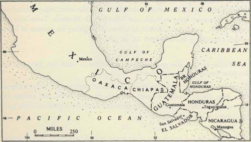
THE SACRED MUSHROOMS OF THE NAHUA
plans for a trip to the remote Indian tribes of the mountains of Oaxaca. These
plans we carried out in 1953.
Our readers must be patient with us if we develop our story deliberately,
laying the groundwork for our own inquiries by first assembling the evidence
previously available - evidence of the highest intrinsic value and not alone for
Fig. 12
ethno-mycologists. Ten early writers speak of the mushroom cult. We shall
translate what they had to say, but as the original sources are often hard to come
by, for the convenience of students we supply these texts in Appendix IV on
pages 404-407, keyed numerically to the translations in the following pages.
Those who read Spanish will relish the style of the old authors, terse, supple,
free of literary artifice, the testimony of witnesses putting down on parchment
for posterity what they saw and heard and experienced, usually coloring their
comments with the religious feelings proper to their age. How exciting it is
to exhume from the grave of centuries these almost forgotten voices telling us
of the sacred mushroom and the powers attributed to it! This was the age of
Richard Hakluyt, and our quotations belong to the world of exploration and
discovery that we associate with his name.
Montezuma,1 most famous of Aztec kings, assumed his regal office in the year
1502, and the event was celebrated with exceptional pomp. The Spaniards'
carvels were already probing the Caribbean, but Cortez' landing at Vera Cruz
was still seventeen years off. The ceremonies and festivities of the new monarch's
i. We adopt the popular spelling. Scholarly usage would require 'Moctezuma II'.
2 1 7
installation were so spectacular that visitors arrived from far and wide, and even
certain of Montezuma's traditional enemies, princes of the Tlascalan people,
came in disguise to witness the great event. They were discovered, but the
magnanimous Montezuma, instead of exploiting their capture, had them
royally entertained. After his induction into office, the whole city gave itself
over to celebrating with night-long dancing. To the Tlascalan princes were
served the inebriating mushrooms, that they might the better enjoy themselves.
Almost a century later, in 1598, one Fernando de Alvarado Tezozomoc, of
Indian blood, composed a Cronica Mexicana. After giving his account of Mon-
tezuma's anointing in his chapter 87, he goes on:
[i]
... To the strangers they gave woodland mushrooms on which they got drunk, and
thereupon they entered upon the dance.
Tezozomoc's account is sparing in details. Almost twenty years earlier a Domi-
nican friar, Diego Duran by name and a mestizo by blood, had written his
Historia de las Indias de Nueva Espana, in which the more loquacious cleric gave
his account of the same episode:
[2]
The sacrifice finished, and the steps of the temple and court remaining bathed in human
blood, they all went off to eat raw mushrooms, on which food they all lost their senses
and ended up in a state worse than if they had drunk much wine; so drunk and senseless
were they that many of them took their own lives, and by dint of those mushrooms,
they saw visions and the future was revealed unto them, the Devil speaking to them in
that drunken state.
Both Tezozomoc and Duran seem to have relied on a single source, now
lost to us. Neither described the mushroom nor gave it a name, though we learn
that it was associated with the woods and that it was eaten raw. Furthermore,
through the friar's priestly bias and exaggeration one perceives an important
fact: the mushroom was more than an intoxicant, for to it were attributed
divinatory powers and these powers were thought by the Catholic chronicler
to stem from Satan. How strange that Gitlow in his New Guinea observations
should have similarly mentioned a fungal frenzy that led even to suicide.
Our third witness is Toribio de Benavente called Motolinia, a Franciscan friar
who died in 1569. He was the author of a work whose lengthy title begins
thus: Ritos antiguos, sacrificios e idolatnas de los Indios de la Nueva Espana, and in it
he gave further details about the extraordinary mushroom. Perhaps one senses
behind his words the same lost source on whom the other writers relied, and
218
PLATE XXXVIII Jean-Henri
Fabre. Boletus duriusculus Kalchbr.
THE SACRED MUSHROOMS OF THE NAHUA
he ends his account with words that could only have had horrifying connota-
tions for the believing Spaniard of the i6th century, for he says that the mush-
room in the Indians' religion played the role of the Host in Christian rites:
[3]
They possessed another method of intoxication, which sharpened their cruelty: for it
they used certain mushrooms or small toadstools, for such there are in this land even as
in Castile; but those of this land are in such wise that, eaten raw and by reason of their
bitterness, [the Indians] drink after them or eat with them some bees' honey; and shortly
thereafter they would see a thousand visions and especially snakes; and as they completely
lost their senses, it would seem to them that their legs and body were full of worms eating
them alive, and thus half raving they would go forth from their houses, wanting someone
to kill them; and by reason of this bestial drunkenness and travail that they underwent, it
could happen on occasion that someone would hang himself, and furthermore toward
others they would be more cruel. They called these mushrooms in their language teuna-
macatlth, which means 'God's flesh', or of the Devil whom they worshipped, and in this
wise with that bitter victual by their cruel God were they houseled.
Motolinia informs us that the inebriating mushroom is small, bitter, and quick
to act. He tells us also the name in Nahuatl of the mushroom, and the meaning
of that name as he understood it.
Our fourth witness was, as it happens, a sworn witness in a judicial proceeding.
What is more - and this is significant in delimiting the cultural areas where the
inebriating mushroom was in use - we are now transported to the Mixtec
country. The Indians of the land that the world calls Mexico have always
been divided among many cultures speaking utterly unrelated languages. At
the time of the Conquest the dominant language was Nahuatl and the various
tribes speaking it may be called collectively the Nahua; of these the politically
dominant tribe was the Aztec. The Mixtec country lies far to the south of the
valley of Mexico, in what is today the state of Oaxaca, on the road to the Zapotec
country and the Isthmus of Tehuantepec. But linguistically the Mixtecs are
unrelated to the Nahua and distinct from the Zapotecs.
On October 15, 1544, in the town of Etlantongo, Esteban Marban, Scribe and
Notary Public in the service of their Majesties of Spain, was taking depositions
in a case involving the alleged apostasy of three notables, all of them Indians,
principal men of Yanhuitlan, Don Domingo the Cacique and the two Gober-
nadores, Don Francisco and Don Juan. It seems that, according to report, with
'diabolic ostentation' for many years they had persisted in invoking their idols
and demons after the manner of their ancestors, with all the idolatrous trappings
of the old religion. The crux of their offense lay in the fact that they had been
219
baptized in 1527 and they were therefore apostates. The depositions in this
case survive, and lengthy extracts were published in 1940 by the Museo Nacional
in Mexico as an appendix to one section of the Codex of Yanhuitlan, in an
edition of this manuscript edited by Wigberto Jimenez Moreno and Salvador
Mateos Higuera. The witness that interests us was one Don Diego, Cacique of
the town of Etlantongo, and we note that an interpreter served him: Don
Diego must have been at home only in his native Mixtec tongue. After lengthy
testimony that we would call hearsay, Don Diego continues:
[4]
. . . and [the witness] knows and saw that some 14 years since, in a fiesta he saw said
Don Francisco and Don Juan drunk, and that they had taken nanacates in order to invoke
the Devil as their forbears had done, and that it is common knowledge and notorious
that whenever it does not rain or when the maize is gathered in, they cry out to the
Devil, and when they gather in the maize, they hold their drunken parties.
Nanacate is the hispanicized form of the Nahuatl nandcatl, 'mushrooms'.
Our fifth witness is one Gaspar de Covarrubias, Governor of the mines of
Temazcaltepec, reporting in 1579 on conditions in his area in a document known
as the Relation de las Minas de Temazcaltepec.1 The working of the mines under
the Spaniards had led to an influx of Nahuatl speakers, but Don Gaspar
expressly says that the tongue of the native-born population was matalpnga,
i.e., Matlatzinca, which today we identify with the Otomi group of languages.
Our informant says that in the old days, when the people were still heathen,
[5]
. . . they were wont to pay in tribute [to the Lord of Mexico], whenever they were
asked to do so, two or three loads of hempen blankets, which are made from, a tree
that is called maguei, and they would give mushrooms on which people get drunk,
and ocote . . .
Additional curious evidence turns up in our sixth source, a book printed in
Mexico in 1637 entitled Doctrina y Ensenan$a en laLengua Mazahua de Cosas muy
Utiles, y Provechosas para los Ministros de Doctrina, written by the Licentiate Don
Diego de Nagera (or Najera) Yanguas, incumbent of Xocotitlan. This is a
manual for the clergy working among the Indians speaking the Mazahua
tongue, which belongs to the Otomi linguistic family. It gives in Spanish and
Mazahua, in parallel columns, the questions that a father confessor directs to
I. The text appears in Papeles de Nueva Espana, Paso y Troncoso, Madrid, 1905, vol. vn, p. 20. We are indebted
to Robert J. Weitlaner for this reference, as well as for the following one.
22O
THE SACRED MUSHROOMS OF THE NAHUA
the penitent, and the various possible responses of the penitent. On folios 27-29
the father confessor catechizes his penitent as to whether he has eaten mush-
rooms and got drunk on them, or given them to others to get drunk on; and
if so, why, whether to find lost objects or for illness. The following extract shows
the tenor of the questions, the column in English being added by us:
[6]
SPANISH MAZAHUA
ENGLISH
por que
yoqhenangueze
why
querias
daguiminemaha
didst thou want
comer togui9a to
eat
essos hongos?
mayho yocho
those mushrooms?
por que
nangueze
because
estaba enfermo
darimi^hoye
I was ill
queria comer
dariminemaha rogoza I wanted to eat
hongos yocho mushrooms
para ver
maqheranuu
to see
lo que perdi
maqhe peqherobexi
what I had lost
quantas vezes?
han^hanixi?
how often?
no los comiste?
que higuiza?
didst thou not eat them?
no los comi
hiroza
I ate them not
solamente anguechco I
only
queria dariminemaha
wanted
comerlos
togoza
to eat them.
Our seventh witness belongs in a different class. Francisco Hernandez, a botanist,
went out to Mexico in the year 1570 to study and describe the flora of that
new world. He devoted seven years to the undertaking, returning in 1577 to
Spain with an immense manuscript. Much of it got copied and printed and
published in three divergent editions, but the manuscript was lost in a fire in the
Escorial without ever being properly edited. Hernandez seems to have devoted
only a brief section to the mushrooms. We find this passage in Volume II of
his Opera brought out in Madrid in 1790, as Chapter 95 of Book IX of the
Historia Plantamm Novce Hispanicz. Alone among our witnesses, Hernandez
might be expected to focus attention on the appearance of the sacred mushrooms,
and what he says is significant though tantalizingly inadequate. He clearly
speaks, not of one, but of three species of mushrooms that either cause psychic
symptoms or are clothed in a halo of supernatural associations. The teyhuinti
provoke uncontrolled laughter. Another kind conjures up spectacles of war or
the likeness of demons. The search for the third species, bespoken for the tables
221
of the rich and mighty, is attended by all-night vigils, and the mushrooms
themselves are saturated in what the anthropologists today call mana. In his
manuscript Hernandez included illustrations of his mushrooms, but alas! those
precious illustrations were apparently lost in the Escorial fire. After
describing a lethal species named dtlalnanacame, Hernandez goes on:
[7]
. . . others when eaten cause not death but madness that on occasions is lasting, of
which the symptom is a kind of uncontrolled laughter. Usually called teyhuinti, these are
deep yellow, acrid, and of a not displeasing freshness. There are others again which,
without inducing laughter, bring before the eyes all kinds of things, such as wars and the
likeness of demons. Yet others are there not less desired by princes for their fiestas and
banquets, of great price. With night-long vigils are they sought, awesome and terrifying.
This kind is tawny and somewhat acrid.
Our eighth and leading witness is the Franciscan friar, Bernardino de Sahagun,
who by reason of his moral and intellectual qualities towers over all his contem-
poraries who were writing about Mexico in the i6th century. He devoted his
many years in Mexico, from 1529 to 1590, to the systematic and sympathetic
study of the Indians among whom he lived and labored. He was the editor
and author of an immense work, a major historical document, the Historia
General de las Cosas de Nueva Espana. Published in Spanish in several editions
and translated also into French and English, this source is familiar to all historians
interested in Mexican culture and the Conquest. Despite its standing as a classic,
there is one fact about this book that is sometimes forgotten. It was a bilingual
composition, being composed in parallel Nahuatl and Spanish texts. The two
texts, while parallel, are not identical. The Nahuatl version preserves the very
words of the native informants as they spoke with Fray Bernardino, and to it
priority should be given over the Spanish text. There are four brief passages in
Sahagun where the inebriating mushrooms figure. The Nahuatl recension
differs sufficiently to justify us in offering it, as well as the Spanish text, to our
readers, especially as the Nahuatl passages have remained until now hidden
behind their linguistic barrier. For locating and translating the Nahuatl passages
we are greatly indebted to Professor Charles E. Dibble of the University of
Utah, to Dr. Arthur J. O. Anderson of the Museum of New Mexico in Santa Fe,
and to Miguel Barrios of Mexico City.
From the sources already quoted it is clear that the Indians regarded their
inebriating mushrooms with reverence, and this called down on their heads
the execrations of professional Christians. The unintentional effect of these
222
THE SACRED MUSHROOMS OF THE NAHUA
denunciations is perhaps to whet the reader's appetite for the mysterious fungi.
Sahagun's Indian informants were doubtless baptized, and perhaps for this reason
or perhaps because of the artful simplicity of Fray Bernardino himself, they
scarcely link the mushroom with native religious beliefs or divinatory prac-
tices, and the hallucinations that they attribute to the eating of mushrooms
are so horrible for the most part that one asks why anyone should ever have
been tempted by them.
We shall now offer the four quotations from Sahagun, each of them in dupli-
cate, the translation from the Spanish version followed by the translation from
the Nahuatl. The first and longest describes a mushroom party. Merchants have
returned from a long and successful journey and they are giving the party to
celebrate their success. While the text itself does not hint at religious associa-
tions and certainly precludes priestly direction, the context in Book IX is
saturated with supernatural beliefs and practices, and leaves the attentive reader
in no doubt that the mushroom gathering itself was similarly instinct with the
divine presence.
[8 A. From the Spanish]
The first thing eaten at the gathering were certain black little mushrooms, which they
call nandcatl, which inebriate and cause hallucinations, and even excite lust. These they ate
before dawn, and they also drank cacao before dawn. The mushrooms they ate with
honey, and when they began to get heated from them, they began to dance, and some
sang and some wept, for now were they drunk from the mushrooms. And some cared
not to sing, but would sit down in their rooms, and stayed there pensive-like. And some
saw in a vision that they were dying, and they wept, and others saw in a vision that
some wild beast was eating them, others saw in a vision that they were taking captives
in war, others saw in a vision that they were to be rich, others saw in a vision that they
were to own many slaves, others saw in a vision that they were to commit adultery
and that their heads were to be bashed in therefor, others saw in a vision that they
were to steal something, wherefore their heads were to be bashed in, others saw in a
vision that they were to kill someone, wherefore they were to be killed, others saw in
a vision that they were drowning in water, others saw in a vision that they would live
and die in peace, others saw in a vision that they were falling from on high and would
die from the fall. All the disastrous happenings that are wont to happen, these they saw
in visions. Others saw themselves sinking in water as in a vortex. Then when the drun-
kenness of the mushrooms had passed, they spoke one with another about the visions that
they had seen.
[8B. From the Nahuatl]
Coming at the very first, at the time of feasting, they ate mushrooms when, as they
said, it was the hour of the blowing of flutes. Not yet did they partake of food; they
drank only chocolate during the night. And they ate mushrooms with honey. When
223
C H A P T E R F I V E
already the mushrooms were taking effect, there was dancing, there was weeping. And
some still in their right senses sat in their places leaning against their houses; there they
merely sit, nodding their heads. Some saw in a vision that already they would die [so]
they sat weeping. Some saw in a vision that they would die in war. Some saw in a vision
that they would be devoured by wild beasts. Some saw in a vision that they would take
the enemy captive in war. Some saw in a vision that they would become rich, wealthy.
Some saw in a vision that they would buy slaves, would become slave owners. Some
saw in a vision that they would commit adultery [and so] would have their heads bashed
in, would be stoned to death. Some saw in a vision that they would steal; [so] also would
they be stoned to death. Some saw in a vision that their heads would be crushed with
a stone, would be imprisoned. Some saw in a vision that they would perish in the water.
Some saw in a vision that they would pass to tranquillity in death. Some saw in a vision
that they would fall from the housetop, tumble to their death. All such things would
happen to them at this time; all such things they saw, or else they sank into oblivion.
And when [the effect of] the mushrooms ceased, they conversed one with another, spoke
of what they had seen in visions.
Sahagun tells us that the nandcatl were small and black; that the Indians
indulged in them in gatherings assembled for the purpose; and that the intoxicat-
ing effects were generally unpleasant for the eaters, which we may doubt. The
Spanish text says that they excited lust, an observation calculated to tease the
16th century Spaniards, but this observation is missing in the Nahuatl version.
Sahagun's second and third references to the inebriating mushrooms occur
in passages primarily concerned with peiotl or 'peyote', the cactus product long
used by certain Indians for its psychic and other effects, and in recent years an
object of intensive study and discussion among anthropologists, biological
chemists, psychologists, neurologists, and even literary thinkers like Aldous
Huxley. The use of peyote was endemic among the Indians of Mexico north
of the Valley of Mexico and of what is now the Southwest of the United States.
Sahagun composed his work primarily from within the framework of the
Nahua culture with its cultural center in the Valley of Mexico. In the passages
that we are about to give, he is speaking of the northern Indians, known to the
Nahua collectively as the Chichimecas, a term applied to nomadic Indians
generally. The Chichimecas, whatever the language or tribe, were hunters and
food-gatherers, nomads, savages to be feared and also despised. Among them
there were some, such as the people now known as Otomi, who in historic
times had become settled on the land; but they were still by habit called 'Chi-
chimecas'. To distinguish them from the true nomads, the latter were called
tRe 'genuine' or Teochichimecas. While there is some ambiguity in the following
quotations, we think that, carefully studied, they yield a sensible meaning only
224
THE SACRED MUSHROOMS OF THE NAHUA
if we understand Sahagun as describing the use of peyote among the Northern
nomads, and comparing that use with the use of inebriating mushrooms among
the Aztecs. It is as though the Aztec compilers were saying, "The Chichimecas
have their peyote just as we have our mushrooms." This interpretation, which
we accept, was offered to us as a tentative suggestion by Dr. Anderson. If it is
right, then apparently the northern limit of the use of the inebriating mushrooms
was roughly the Valley of Mexico and the Nahua civilization.
[9A. From the Spanish]
[The Teochichimecas] also possessed great knowledge of herbs and roots, and knew
their properties and virtues: It was they who discovered and first used the root they call
peyotl, and those who ate and took it, made it serve in place of wine and in place of
what are called nanacatl [?], which are the evil mushrooms that inebriate just like wine.
And they would gather together on a level spot after having drunk and eat, where they
would dance and sing a night and a day, according to their pleasure, and this for one day,
for on the morrow they wept much, and they would say that they were cleansing and
washing their eyes and faces with their tears.
[IOA. From the Spanish]
There is another herb, like earth's testicles [truffles], which is called peyotl. It is white
and grows in the direction of the north. Those who eat and drink it see frightful visions,
or laughable ones. This state of drunkenness lasts two or three days and then goes away...
[pB. From the Nahnatl]
And the Teochichimecas had knowledge of the herbs, the roots; how they were, how
they propagated. These people discovered the so-called peyote. They esteemed it in
place of wine or mushrooms [?]. They gathered somewhere, assembled on the plain.
At that place there was song and dance all night and all day. And on the morrow once
again they gathered; wept, wept copiously. It was said their faces were washed. With
their tears they cleansed their eyes.
[IOB. From the Nahuatl]
Peyote: this peyote is white and it grows only in the land of the Chichimecas, the land
of the god MixcoatJ, which is called the land of the dead north. Whoever eats or drinks
of it becomes intoxicated as if by mushrooms. Likewise he sees many things which are
frightening or laughable. Perhaps one day or two days he is intoxicated . . .
The fourth and final passage in Sahagun is the most interesting of all. Here
he calls the inebriating mushroom by the name that Motolinia used-teo-
nandcatl - which in its first element carries the religious association that Sahagun
avoided elsewhere. Here the mushroom is described in some detail, and the
Nahuatl text is much longer and more interesting than the rather arid Spanish:
225
[HA. From the Spanish]
In this land there are certain little mushrooms that are called teonanacatl. They grow
beneath the grass in fields or moors. They are round, have a long little stem, thin and
round. When eaten they have a bad taste, hurt the throat, and inebriate. They are
medicinal for fevers and the gout. Only two or three are to be eaten, not more: those
who eat them see visions and feel palpitations of the heart. The mushrooms incite lust
in those who eat many, or even be they few. To wild or mischievous youngsters people
say that they have eaten nanacatl.
[IIB. From the Nahuatl]
One mushroom is called teo-nanacatl. It grows in the waste places, under the grass.
The cap is round, the stem is elongated. By its bitterness it hurts, it hurts the throat. It
intoxicates one, makes one dizzy, makes one violent. It helps in fevers, gout. Only two
or three are to be eaten. It makes one suffer, causes affliction, makes one restless, causes
one to flee, frightens one, makes one hide. He who eats many, many things sees. He
terrifies people, makes them laugh. He strangles himself, hurls himself from high places,
cries out, is afraid. When he eats it in honey he says, I eat mushrooms, I bemushroom
myself. Of the boaster, the braggart, the vain one it is said, "He bemushrooms himself."
So far we have quoted only from i6th century sources. Our ninth witness
belonged to a later generation. He is Jacinto de la Serna, a cleric who in
the middle of the iyth century composed a guide for clergy ministering to the
Indians. His work was entitled Manuel de Ministros de Indies para el Cono-
cimiento de sus Idolatnas y Extirpation de Ellas. He was a garrulous busybody,
zealous in rooting out and extirpating all expressions of the Indians' old religion,
and eager in his narrative to leave a record of his own zeal. Chapter IV of his
work continues a recital of incidents that had happened to the author proving
(as he says) that idolatry was still rampant among the Indians in his own time.
In Section 3 of this chapter lie is discussing native physicians and midwives,
especially the role of 'witchcraft' in their practices, and certain goings on in his
own household that had aroused his liveliest suspicions. A certain Indian,
master of the native lore, had lately arrived in the village and had officiated at a
religious rite in which the intoxicating mushrooms had been a central feature.
The description of the religious ceremony reaches us through Don Jacinto
by hearsay only, as of course he was not present, but it carries a ring of authen-
ticity, and reminds us of the stirring words with which Motolinia ended his
observations on the mushroom:
[12]
And what happened was that there had come to [the village] an Indian, a native of the
village of Tenango, great maestro of superstitions, and his name was Juan Chichiton,
226
T H E S A C R E D M U S H R O O M S O F T H E N A H U A
which means 'little dog', and he had brought the red-colored mushrooms that are
gathered in the uplands, and with them he had committed a great idolatry, and before
I tell of it, I wish to describe the property of said mushrooms, which are called in the
Mexican language Quautlannamacatl, and having consulted the Licenciate Don Pedro
Ponce de Leon, the great Minister and Master of Masters as I said in Chapter II, he told
me that these mushrooms were small and golden, and to gather them it was the custom
for the priests and old men deputized as ministers for this kind of humbuggery to go up
into the mountain, and they remained almost the whole night in prayer and superstitious
entreaties, and at dawn, when there sprang up a certain breeze that they knew, then
they gathered the mushrooms, attributing divinity to them, possessing as they did the
same effect as ololiuqui [rivea corymbosa (L.) Hallier filius] or peyote [Lophophora
Williamsii (Lem.) Coulter], because whether eaten or drunk, it intoxicates them and
deprives them of their senses, and makes them believe a thousand foolish things. And
so this Juan Chichiton, having gathered the mushrooms on a certain night, in the house
where everyone had gathered on the occasion of a saint's feast, the saint was on the
altar, and the mushrooms with pulque and a fire beneath the altar, the teponastli [a
percussion instrument peculiar to the Aztecs] and singing going on the whole night
through, after most of the night had passed, said Juan Chichiton, who was the priest
for that solemn rite, to all those present at the fiesta gave the mushrooms to eat, after the
manner of Communion, and gave them pulque to drink, and finished off the festivities
with an abundance of pulque, so that what with the mushrooms on the one hand and the
pulque on the other, they all went out of their heads, a shame it was to see.
Don Jacinto goes on to relate how he had made utmost efforts to ferret out
and lay his hands on Chichiton. There was a hot chase, but by the skin of his
teeth the 'Little Dog' had eluded his pursuer's clutches - to the considerable
relief of the modern reader, who hopes that Chichiton lived to preside over
many another mushroomic agape.
Our tenth and final source is French: the Histoyre du Mechique, written by An-
dre Thevet not later than 1574. His text is a translation or paraphrase of a lost
work, Antiguedades Mexicanas, written about 1543 by the Spanish cleric Andres
de Olmos. The historian is speaking of events that had taken place in the middle
of the 15th century, and thus he is placing the use of our mushrooms earlier
than any of our other sources, and he places them in an Otomi context. Thevet's
manuscript lies in the Bibliotheque Nationale and was first published in 1905,
edited by Ed. de Jonghe, in the Journal de la Societe des Americanistes de Paris
(Nouvelle Serie, vol. n). Our quotation is from the fourth chapter, page 18:
[13]
. . . Said Lord of Tezcuq [Tezcoco] . . . paid great reverence to the gods and took great
care of the temples and ceremonies; he commanded also that the youths and maidens
should dance in the temples, . .. that they should strew the temple with roses and flowers,
227
dancing constantly before them, both those of the city and the near neighbors, whom the
devil abused making them eat some herb that they call naucatl, which made them lose
their senses and see many visions.
Our ten documentary sources treating of the divine mushrooms are sup-
ported by other linguistic evidence. There are several early lexicons to cite. The
year 1571 saw the publication in Mexico of a Nahuatl dictionary, Vocabulario en
lengua castellana y mexicana, compiled by Alonso de Molina. In its pages we
discover under hongo a series of names for mushrooms that inebriate, hongos que
emborrachan or que embeodan. Here are these words, with their literal translation:
xochi nanacatl:
'flower mushrooms'
tepexi nanacatl: 'cliff mushrooms'
ixtlauacan nanacatl: 'savannah mushrooms'
ma$auacan nanacatl: 'mushrooms of the stag's places'
teyuinti nanacatl: 'mushrooms of the divine inebriation',
with te- derived from teotl, 'god', and -
yuinti from yuintia, 'inebriation'.
Molina, born in Spain, arrived with his parents in Mexico in 1523 and after
learning Nahuatl served the Franciscan friars as interpreter. We know not how
reliable his mushroom names are. Hernandez, as we have seen, also mentions
the teyuinti, but neither Hernandez nor Molina uses teo-nandcatl, which we find
only in Sahagun and Motolinia.
More interesting for us than Molina's work is a Zapotec lexicon, Vocabulario
Castellano-Zapoteco, compiled by Fray Juan de Cordoba and published in 1578
in Mexico. In it we find the words pea$6o, peya$6o, which he defines as honguillo
o xeta con que se emborracha, 'little mushroom or toadstool on which one gets
drunk'. (The accents on his words appear to represent glottal stops.) Under
xeta he reports an intoxicating mushroom that grows in trees, which he calls
nocuana peneeche, a designation that the Zapotec of today fails to recognize.1
Here then is proof that the inebriating mushroom was familiar to the Zapotecs,
and thus we establish as a minimum range for the use of the inebriating mush-
room an area that includes the Nahua and Otomi peoples, the Mixtecs, and
southeastward to the Zapotecs of the Valley of Oaxaca and probably the Isthmus
of Tehuantepec. If our interpretation of Sahagun is right, the use of the mush-
i. Pedro Carrasco reports that in old Otomi lexicons, under hongo, there are names for the inebriating
mushrooms. This would support the testimony concerning the Otomies that we have quoted in our text.
See Carrasco's Los Otomies, Mexico, 1950, p. 230. We have had no access to these lexicons. All old dictionaries
for the Indian languages of Mexico and Guatemala should be combed for such references.
228
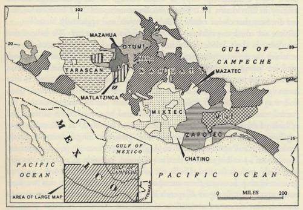
THE SACRED MUSHROOMS OF THE NAHUA
room petered out as one advanced north from the Valley of Mexico, being
replaced by the peyote of cactus origin. To the southward we cannot define
the boundaries. Our information about the important Zapotecs is relatively
Fig. 1^. THE MUSHROOM CULT IN l6th AND lyth CENTURIES
Linguistic areas where contemporary reports establish use of divinatory mushrooms. As modern
evidence indicates that the cult prevails only in uplands, all contours below, say, 600 meters should
probably be excluded. Conversely, upland areas such as Mazatec and Chatino as to which early evi-
dence is lacking undoubtedly used the mushroom. Northern limits are quite definitely fixed, but
eastern limits in Chiapas are uncertain.
rich, by comparison with the complicated mosaic of other Indian cultures on
all sides of them.
But there are a few other old lexicons that document the use of our mush-
rooms. Some years ago Walter Miller discovered the manuscript of an early
Mije dictionary in the Mije village of San Lucas Camotlan. It now lies in the
Museo Nacional. In it 'the little mushroom with which people get drunk', el
honguitto con que se emborrachan, is rendered by the Mije word maxmux. The
manuscript may date from the i8th century. A Tarascan lexicon composed by
Fray-Maturino Gilberti and published in 1559 translates 'the mushroom that
inebriates' by the expression cauiqua terequa, wherein the second element means
229
'mushroom'. The Tarascans live in Michoacan, to the west of Mexico City. Al-
ready we have placed the mushrooms in the Matlatzinca country: our previous
evidence is confirmed by the Matlatzinca lexicon of Fray Diego Basalenque,
dated 1642, a manuscript copy of which belongs to the John Carter Brown
Library in Providence, R. I. The inebriating mushroom is the intza chohui, and
we discover that chohui means both 'mushroom' and apparently 'fiesta'!
Now we come to evidence of a wholly different character. We believe that
we detect in the subtleties of Nahuatl grammar a clear expression of the awe
in which the divine mushroom was held. Let us examine that term teo-nandcatl,
used by Sahagiin and Motolinia. The initial element teo- carries in Nahuatl
three distinct meanings. It can signify simply 'great' or 'important'. It may
mean 'genuine' or 'real', as in Teo-chichimecas. It is derived from teotl, 'god',
and may mean 'divine' or 'sacred'; teo-nandcatl means unquestionably the
'sacred mushrooms'. Nandcatl, in turn, is formed by a duplication of the initial
syllable of ndcatl, 'flesh'. Thus mushrooms are called 'flesh' in Nahuatl, assum-
ing however the plural form nandcatL This particular fungal metaphor has its
analogy in the Pashto language of Afghanistan, where there is a word for
'mushroom', poczl&i (potsakdi) that is a feminine variation of potsdkai, meaning
'soft flesh' such as the flesh of the ear lobe. (Of course we do not suggest a
genetic kinship between these metaphors, but when we think that we have
come upon a simple figure of speech in a fungal vocabulary, it is reassuring to
discover that the same association of ideas has occurred to other peoples.)
The figure of speech in teo-nandcatl was a living one in the i6th century, for
Motolinia translates the term as came de dies, 'god's flesh', and then immediately
this good Catholic offers his own substitute, came del demonio, 'Satan's flesh',
thus illustrating the old truth that one man's God is another man's Devil.
Perhaps the interesting thing about nandcatl is its plural form. In Nahuatl nouns
representing inanimate things are invariable as to number, and by this gram-
matical convention the vegetable world is inanimate. But there are significant
exceptions, of which the following three are outstanding:
SINGULAR PLURAL
Sky
ilhuicatl
ilhuicame
Mountain
tepetl
tetepe
Star
dtldlin citlaltin
These exceptions are apparent rather than real, for the Nahua personified the
sky, mountains, and stars, and the plural form simply expresses the way of
feeling that attributed to these cosmic beings a soul. There are other exceptions
230
THE SACRED MUSHROOMS OF THE NAHUA
similarly suggestive. For example, tetl, 'stone', becomes teme in the plural,
but only when it refers to graven images. We believe that another exception
is our nandcatl, a plural form expressive of the divine afflatus dwelling in the
inebriating mushrooms.1
How impressive is this grammatical evidence of the role of the mysterious
mushroom in the Nahua mentality! It becomes all the more noteworthy when
we discover a perfect parallel among another mycophilic people, in this case the
Russians. At an early stage in the evolution of the Slavs there developed a
tendency to substitute the genitive case for the accusative when a masculine
noun representing an animate creature was the goal of the verb. Today this is the
rule in the various Slavic languages. In folk Russian this genitive is used not
only for nouns denoting animate beings, but also for the names of various
mushrooms and sometimes for certain trees, when the mushroom or tree is
individualized, i.e., is a single entity.2 This use is widespread in Russian dialects,
and occurs also in Ukrainian and White Russian. One hears nashol griba, 'he
found the mushroom', wither/fed in the genitive case; nashol grusdja, ryzhika,
borovika. Among the trees the oak is especially favored by similar treatment,
e.g., srubil duba, 'he chopped down the oak'. The oak used to be worshipped
in pagan times by the eastern Slavs as the thunder tree dedicated to the god
Perun. Thus in the folk language we discover a grammatical expression of
animism. It is possible to offer yet another example in Russian. In the standard
language the mushroom known as the masljenik has a special plural form,
masljata, and the plural of another mushroom name is opjata in certain unedu-
cated circles. The plural suffix here used is normal only with certain nouns
designating young animals, birds, and children! These peculiarities in Russian
grammar show that our interpretation of nandcatl does not strain credulity.
Parallels in unrelated languages and cultures of this kind reinforce each other;
that is, they illuminate a common trait, in this case the inclination of peoples
strongly mycophile to personify their beloved mushrooms.
After our long parade of early authorities and learned analysis, let us sum
up what we have discovered. When the Spaniards arrived in Mexico, they
found an inebriating mushroom in wide use among the Indians from the Valley
1. It goes without saying that for our discussion of Nahuatl linguistics we have relied on several of the outstanding
Nahuatl specialists of our time, to wit, Professor Wigberto Jimenez Moreno of Mexico, Professor Charles E.
Dibble of the University of Utah, and Dr. Arthur J. O. Anderson of the Museum of New Mexico in Santa Fe.
We are the first to point out the significance of the plural form that we discover in nandcatl, a thesis to which
the aforementioned authorities give their reserved and tentative blessing.
2. For guidance on this feature of Russian grammar see A. A. Shakhmatov's Kurs Istorii Russkogo Jazyka, St.
Petersburg, 1911, vol. m, p. 338. We are also indebted to Prof. Roman Jakobson for his elaboration of the same
theme in private correspondence.
231
of Mexico southwards. This mushroom produced hallucinations that the Indians
thought were divinely inspired. One author, Hernandez, says expressly that
there were various species of such mushrooms, and as he was a botanist his
testimony is weighty. The lexicographer Molina mentions five species. There
is a multiplicity of names for the inebriating mushrooms in Nahuatl, for which
various explanations may be offered. Each species would have its own name, of
course, and furthermore the names might vary according to the region. A
third possibility is that the divine aura bathing the mushrooms might cause
people to take refuge in euphemistic alternative names. The mushrooms of
course were wild and seem to have grown both in meadows and in the woods.
(Jacinto de la Serna refers to them as quautlannamacatl, 'woodland mushrooms'.)
As to one species, Sahagun says that they were small, with a stipe long for the
height, thin and round. Sahagun describes these as black, but others speak of
the inebriating mushrooms as golden or tawny or approaching red. In two
authors we hear of ceremonies attending the gathering of mushrooms - nights of
prayer and vigil. Four clearly associate the mushrooms with religious rites. Six
agree that it was used in communal festivities that bordered on orgies and led
to wild excesses. The mushrooms were eaten raw, and the taste was acrid or
bitter, honey being used as the vehicle for swallowing them. There is no reason
to believe that our Spanish witnesses tasted the mushrooms, for (unless they
came from Catalonia) they were mycophobes and this cultural heritage would
reinforce an initial repugnance for native 'idolatries'. But some of our witnesses
were Indians, albeit converted, and they must have known the taste and ac-
curately described it. Sahagun alone speaks of a medicinal virtue in the mush-
rooms: he says that the teo-nandcatl were good for gout and fevers. But on this
point it is noteworthy that the mushrooms are not even mentioned in the great
medicinal herbal of the Aztecs, known as the Badianus manuscript, which
was compiled in Sahagun's own convent, the Colegio de la Santa Cruz at
Tlaltelulco, and doubtless under his supervision.1
There may well be references to our sacred mushrooms in the old writers
that we have not come upon, and in the voluminous archives of unpublished
documents in Mexico additional references will surely be discovered. At the
same time we must also stress the fact that by our method of culling and distil-
ling the references to the sacred mushrooms we inevitably convey an impression
of their importance that is scarcely supported by the whole corpus of docu-
i. The authors were Indian converts, Martinez de la Cruz and Badianus the translator. The ms. lies in the
Vatican, but was published in facsimile by the Johns Hopkins Press in 1940, edited by Emily Walcott
Emmart.
2 3 2
THE SACRED MUSHROOMS OF THE NAHUA
ments relating to i6th century Mexico. That documentation is immense. Other
narcotic herbs also play a role therein: poyomatl, ololiuqui, peiotl; and tobacco
(pisiete] was also treated as though it belonged in the same category. There are
important i6th century sources dealing with such matters where references
to the inebriating mushrooms are strangely absent: one of these is that valuable
work, Problemas y Secretes Maravillosos de las Indias, written by Juan de Cardenas
and published in Mexico in 1591.
From the beginning of our inquiries into the sacred mushroom of the Nahua
we were on the lookout for i6th century illustrations of it. The botanist Her-
nandez in his text said that he was depicting four kinds of mushrooms including
the teyhuinti, but the 1790 edition carried no illustrations, and his drawings,
which would have been precious for us, must have been consumed in the Escorial
fire. However, our searches have not been bootless. In the Florentine Codex we
have discovered one picture, hitherto unremarked by students, and Robert J.
Weitlaner has drawn our attention to a second in the Magliabechiano Codex.1
We take pleasure in reproducing both in faithful color, this being facilitated
by a happy chance: the two codices, though lying in different libraries, are
both in Florence.2 The illustrations are singularly significant for us, being com-
plementary, one of them executed by a Spanish artist and the other by an
Indian in the tradition of his people, though he shows traces of Spanish influence.
Both illustrations are in the nature of pictographs, vignettes intended to convey
almost a verbal message. Neither tells the mycologist anything mycological
about the sacred mushrooms, but both are eloquent and curious expressions of
the contrasting attitudes of the two peoples toward them.
Sahagiin's great work survives in two principal codices, of which the Flo-
rentine Codex, profusely illustrated, ranks first. Although most of the illustra-
tions were done by native artists, some were by Spaniards, and it was a Spaniard
who made the five small pictures representing various mushrooms that Sahagun
1. In 1952 Mr. Weitlaner discovered an old topographical codex or lienzo in the possession of the local authorities
in the village of Tlacoatzintepec, three days'journey by foot or animal from Chiltepec, in the State of Oaxaca,
where the people belong to the Chinantec culture area. A copy was made and is now preserved in the Museo
Nacional. At one place in this chart, in a glade, there is a pair of crossed mushrooms. They might represent
teo-nandcatl, but as the Indians are generally mycophagous, they might simply indicate a good spot for gathering
edible fungi. That a pair of mushrooms is pictured may, however, be significant, as will become evident later
in our argument.
2. What we call the Florentine Codex lies in the Biblioteca Laurenziana, Florence, where it is designated Med.
Pal. 218-220. The Magliabechiano Codex is in the Biblioteca Nazionale, Florence, and carries the designation
B. R. 232. The miniatures of the former were badly reproduced in the Paso y Troncoso edition (uncompleted)
of Sahagun, Madrid, 1905-6. The Magliabechiano Codex has been twice published in facsimile, the so-called
Loubat edition, Rome, 1904; and by the University of California, Berkeley, 1903, under the guidance of Zelia
Nuttall.
2 3 3
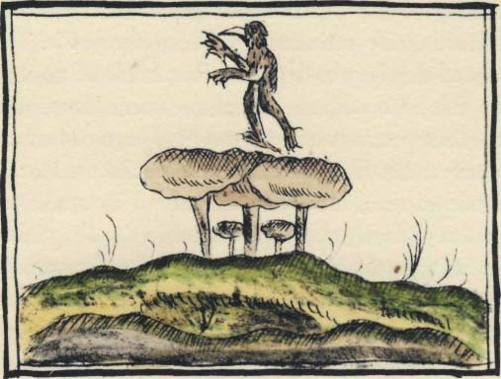
mentions. A close inspection of the five pictures and Sahagun's text makes it
clear that the artist worked from the text, and possessed no knowledge of the
mushrooms outside the text. When he came to the inebriating mushroom,
he undertook to convey his iconographic message in a way natural to a i6th
century Spaniard: a demon is portrayed rising from a cluster of tawny (not
black) mushrooms, and the demon carries those conventional stigmata that
Fig. 14. TEO-NANACATL
as represented by a i6th century Spanish artist. From
Florentine Codex of Bernardino de Sahagun's Historia de las
Cosas de la Nueva Espafia. Biblioteca Laurenziana, Florence.
commonly identified Satan in the Gothic and Spanish worlds. He is clothed
cap-a-pie in fur, a huge beak emerging from his fur-enclosed face. For hands
he has claws. One foot is unformed or malformed, perhaps a splay foot. This is
the malformed foot that survives in the English 'cloven hoof, that led the
French to speak of the Devil as k Bot, the Cripple.1 In this French word and in
this picture we find blended the recurring themes of our book - Satan portrayed
as le Bot, a demonic mushroom, and offstage, by metaphoric transfer, the toad
called le hot that constitutes the third of our unholy trinity.
The second illustration offers us three elements - mushrooms, a man eating
mushrooms, and behind and over him a ghost. The reader will notice that the
I. Malformed and bestial feet characterize various Aztec divinities. Thus the demon Tezcatlipoca was distin-
guished by a club-foot, and Mictlanteculltli had the claws of a gigantic bird. But in the demon of the Flo-
rentine miniature we think it is rash to perceive any influence of Mexican divinities. The craftsmanship reveals
a European mind, and the imp is the obvious visual expression corresponding to the verbal denunciations that
the clergy, as we know, were heaping on the demonic mushrooms.
234
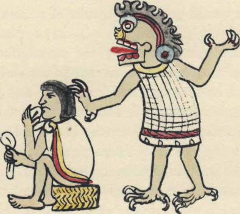
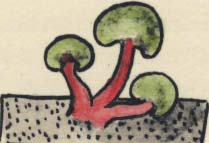
THE SACRED MUSHROOMS OF THE NAHUA
man holds a mushroom in each hand. According to Professor Jimenez Moreno,
the ghost is probably Mictlantecuhtli, Lord of the Underworld, who is depicted
on other pages of the same Codex. How far removed from the Spaniard's
conception is the Indian's! Not only is the craftsmanship of these artists, con-
temporaries of each other, poles apart; their message is likewise. The Spaniard
reports rather prosaically the existence of a demonic mushroom to his European
Fig. 15. TEO-NANACATL
as represented by a i6th century Mexican artist. From
Magliabechiano Codex, Biblioteca Nazionale, Florence.
public. The Indian, though undoubtedly a baptized Christian, conveys a sense
of the awe that he still felt in the presence of the mysterious teo-nandcatl.
That the mushrooms in this miniature are green should not disconcert the
mycologist: green, the color of jade, meant in Mexican iconography that the
object so depicted was of great worth.
1 he last of our citations from old Spanish documents was from the mid-
seventeenth century: Jacinto de la Serna's episode with Chichiton. With him
the references to the inebriating mushrooms ended. Thereafter observers no
longer reported on the mushroom cult, and except in new editions of old
books and in works based on them, the cult was never more mentioned. The
cult itself was apparently extinct, and only a handful of specialists knew that it
had ever existed. For example, Francisco A. Flores, when in 1886-8 he brought
out in Mexico his three volume Historia de la Medidna en Mexico, listed the
Nahuatl names for the inebriating mushrooms as given by Molina, translated
235
them, and then rashly by sheer guesswork tried to identify them according to the
classifications of mycologists. William H. Prescott in his classic Conquest of
Mexico ignored the subject. Yet we know that he was familiar with it. He drew
on most of the sources that we have cited, and in particular the two accounts
of Montezuma's assumption of office. In Book II Chapter 6 he speaks of the
'honorable entertainment' offered to the Tlascalan princes by Montezuma, but
he deftly excises the reference to the sacred mushrooms. By now one is so used
to the subconscious rejection of mushrooms by the mycophobic Anglo-Saxons
that it would be more a matter of remark if Prescott had mentioned the teo-
nandcatl.
Then suddenly one day the sacred mushrooms sprang to life again. On
May 4, 1915, an ethno-botanist of established and deserved reputation, W. E.
Safford, read a paper before the Botanical Society in Washington in which he
flatly and sweepingly denied that there had ever been an inebriating mushroom
in the indigenous cultures of Mexico. His paper was published later in that
year in the journal of Heredity, and it was a full-dress presentation, richly il-
lustrated and documented. Dr. Safford said that the Spanish 'padres' (as he
somewhat condescendingly called them) had been confused: they had taken
for mushrooms what had really been dried buttons of a cactus, the Lophophora
Williamsii, the peyotl of Aztec times, the mescal button of Texas. He declared
that three centuries had failed to reveal a fungal intoxicant in Mexico. He
quoted Sahagun as saying that the Chichimecas had been the first Indians
to discover the alleged intoxicating property of the 'mushroom'; he went on
to say that the Chichimecas had occupied northern Mexico, that that was
therefore the region where to seek the mushroom, that he had pushed his own
researches exhaustively in those areas and in the Southwestern states of the
United States, and that he had found nothing.
Dr. Safford's paper drew wide attention and was widely accepted. Many
learned from it for the first time that there had been a belief in an inebriating
mushroom, at the same time that they learned the mushroom had never existed.
How ironic it will be if Dr. Safford himself, in the long run, should be remem-
bered chiefly because of this resounding blunder that he made, a classic example
of the fallibility of the specialist! For of course the Spanish 'padres' were right
and Dr. Safford was wrong. Dr. Safford's paper was extraordinary for the
vehemence (may we say 'telltale' vehemence?) that this Anglo-Saxon showed in
rejecting the teo-nandcatl. It never occurred to him that he had to demolish
not only the Spanish 'padres' but also all the native informants on whom they
relied, and even the Nahuatl vocabulary that they used!
236
THE SACRED MUSHROOMS OF THE NAHUA
The source of Dr. Safford's error lay in his misreading of Sahagun's sentence
about the Chichimecas and the emphasis that he placed on this single miscon-
strued passage. Loosely constructed though the sentence is after the fashion of
16th century prose, its meaning is clear. The Chichimecas were the first to use
thepeyotl, says Sahagun, and they used it in the way that we the Nahua (Sahagun's
informants) use the inebriating mushroom. We may be sure that Dr. Safford
canvassed the Chichimeca country thoroughly, and his negative findings there
and in the Southwest of the United States tend to confirm our interpretation
of Sahagun.
Just as toxins appropriately administered stimulate the growth of anti-bodies,
so the Safford paper served a useful purpose in stimulating the inquiries of
Mexican workers, who properly resented the charge that early Spanish observers
could not tell a mushroom from a cactus button. The details of this inquiry
need not detain us here. To Dr. Bias Pablo Reko, a Mexican of Austrian birth
and Slavic provenience, belongs the primary accolade for persisting in the search
for the mushroom cult. He was the first to declare his belief that the cult still
survived. He so expressed himself shortly after the Safford lecture, and he
began to look for the cult in the State of Oaxaca. To Robert J. Weitlaner goes
the distinction of having first re-discovered the sacred mushrooms themselves.
This excellent anthropologist and tireless worker laid his hands on samples in
the remote town of Huautla de Jimenez, Oaxaca, in 1936. He sent them to
Dr. Reko who in turn forwarded them to the botanical authorities at Harvard.
They arrived in bad condition but could be identified as a species of panaeolus.
Huautla is the chief town of the Indians known as Mazatecs.
In that same year Dr. Reko's cousin, Victor A. Reko, had published in Stutt-
gart the first paper challenging the Safford argument, Magische Gifte: Rausch-
und Betaubungsmittel der Neuen Welt. In 1938 a young Harvard ethno-botanist,
Dr. Richard Evans Schultes, visited Huautla and obtained additional samples
of the mushrooms and photographs of them in a fresh state. With the help of
Dr. David Linder of the Farlow Herbarium, Harvard University, he identified
them as panseolus campanulatus L. var. sphinctrinus (Fr.) Bresadola. His speci-
mens, carefully preserved, were again examined in the fall of 1955 by Roger
Heim, who confirmed without hesitation the previous identification. In that
same year 1938, on the night of Saturday-Sunday, July 16-17, four white persons
in Huautla attended a mushroom rite performed expressly for them. The four
were the promising young anthropologist Jean Bassett Johnson, his wife Irmgard
Weitlaner-Johnson, Bernard Bevan, and Louise Lacaud. In a paper published
the following year Mr. Johnson gave to the world the first account of the ancient
237
rite: there is no evidence that any white persons had ever before attended it.1
He did not identify the mushrooms that were used.
\
In European sources there is some evidence of inebriating mushrooms in ad-
dition to the fly amanita. Indeed, the earliest recorded reference to psychic
symptoms caused by mushrooms clearly did not relate to the amanita muscaria.
Before describing the fly amanita Albertus Magnus in De Vegetalibus remarks
on the propensity of certain mushrooms to bring about mental disturbance:
Signum autem, quod habcnt humidum vaporosum, est, quod comesti frequenter op-
pilant vias spirituum animalium in capite, et inducunt insaniam.
[Op. cit., Book 2, Chap. 6:87]
Moreover, an indication that they [fungi] are of a moist humor is that when eaten
they often stop up in the head the mental passages of the creatures [that eat them], and
bring on insanity.
I. The Johnson paper is important. Entitled 'The Elements of Mazatec Witchcraft', it was published by the
Gothenburg Ethnographical Museum in Sweden in 1939 as Ethnological Studies 9. Dr. Schultes published two
papers, one as a Botanical Museum Leaflet, Harvard University, Feb. 21, 1939, vol. 7, no. 3, The Identification of
Teonanacatl; the other, 'Teonanacatl: the Narcotic Mushroom of the Aztecs', in the American Anthropologist, n.s.,
42, 1940. These three and Dr. Reko's Mitobotdnica Zapoteca, published by himself in 1945, constitute our basic
modern bibliography. Victor A. Reko's Magische Gifte, of which a third edition appeared in Stuttgart in 194.9,
must be read with caution. For example, he guesses at the identity of the inebriating mushroom, postulating an
'amanita muscaria var. mex.' More disturbing is his assertion that poyomatli, a narcotic plant, was a mushroom.
He arrives at this conclusion by misquoting a passage in Sahagun (substituting llamados for llamada), and by
ignoring another passage in Sahagun where the poyomatli is described in detail as a plant. (See Magische Gifte,
1949, p. 126; Sahagun, Book X, Chap. 24, Canute de Humo; also Book xi, Chap. 7, Sec. 7.) Since Victor Reko
published his work in German, German writers frequently cite him and are misled by him. The modern discus-
sions of our subject are also bedeviled by two idle conjectures of the late Marshall H. Saville, the archeologist,
who without a shred of supporting evidence suggested (i) that the Aztec ruler Tizoc had been murdered with
poisonous mushrooms, and (2) that the astonishing dental work found in the teeth of Zapotec skeletons had
been performed with the aid of mushrooms as narcotics. For the Tizoc reference, see J. Eric Thompson's Mexico
before Cortez, Scribner's, New York, 1933, p. 31. As for the Zapotec dental work, Saville tossed out his fanciful
notion in an extempore, unrecorded talk before the Explorers' Club, New York (Explorers Journal, 1934, vol.
12, p. 7) and a subsequent interview (The New York Times, April n, 1934). The Swedish archeologist S. Linne
took Saville's dental suggestion seriously; see Ethnos, Stockholm, Jan. -June 1940, p. 7. Schultes in his two
papers quotes Saville (via Thompson) on Tizoc. Safford's mushroomic nihilism may have led, by reaction,
to Saville's postulating mushroomic agents right and left in pre-Conquest Middle America. As Saville never
offered his mushroomic ideas formally, we infer that he regarded them as speculative. Bias Pablo Reko in his
Mitobotdnica Zapoteca (pp. 13, 14, 44, 53, and 95) reported names for inebriating mushrooms in contemporary
Zapotec, but he failed to place his informants. In a typewritten note of his left with Mr. Weitlaner he states
that in 193 5 he found the divinatory mushrooms in use among the Zapotecs of Santiago Yaveo and the Chiiian-
tecs of Teocalcingo, two villages situated hard by the Mije country. He gives Chinantec names for these mush-
rooms (a-ni and a-mo-kia). The Chinantecs generally do not know the mushrooms, and if Dr. Reko's report
is reliable, we suspect a cultural borrowing from the neighboring Mijes. Our own efforts to discover knowledge
of the divinatory mushrooms among the Zapotecs of Tehuantepec and the Valley of Oaxaca have been un-
successful. Pedro Carrasco reports the present day use of the divinatory mushroom in Zapotec country, among
the Zapotecs of the southern coast, in the western part of the district of Pochutla, in the village of San Bartolo
Loxicha, where he says it is called the santo nanacate. See his 'Una Cuenta Ritual entre los Zapotecos del Sur' in
the Festschrift entitled Homenaje al Doctor Alfonso Caso, Mexico, 1951, p. 93. On the strength of his evidence we
visited the southern Zapotec country in 1955, with successful results. See pp. 307 ff.
238
THE SACRED MUSHROOMS OF THE NAHUA
The great Clusius may have described, an inebriating mushroom. In the section
on the Fungi pernidaks of Hungary he arrives at the eleventh of the evil species
and says this concerning it:
Ungaricum nomen nullum intellexi, sed Germanicum est Narrenschlvammen ac si dice-
res fatuum vel fatuorum fungum, quoniam forte, si quis vescatur, mente turbetur . . .
Corpore dum e sua volva erumpit, est boleto dissimili, longiore pediculo subnixum
minimo digito graciliore, sescuncialis latitudinis, in metam assurgens, superna parte
Candida, inferna camerata, & multis striis, a pediculo in ambitum productis, notata.
I did not learn its Hungarian name, but in German it is Narrenschwamm, i.e., 'foolish
fungus' or 'fungus of fools', since one may see that he who eats becomes mentally upset...
Its body, when once it has broken its volva, is unlike the Boletus, with a stipe thinner
than the little finger, [the cap] less than 4 cm. in diameter, heading up into a conical top,
white above, partitioned below with multiple furrows, radiating from the stem in a circle.
Our Hungarian friend, Dr. Stephan F. Borhegyi, has supplied us with the Ma-
gyar name that Clusius failed to get: bolondgomba, 'fool-mushroom', a term still
familiarly used in Hungary, especially in the rural areas, as when one asks of a
person behaving foolishly, "Have you eaten the fool's mushroom;", or when
one rejects a proposition by saying, "Do you think I have eaten a fool-mush-
room, that I should do such a thing?" Or again: "He is laughing as though he
had eaten fool's mushrooms." In Hungary the 'wise-woman', javas asszony,
is said to use this same mushroom in love philtres, and the angry lover sends the
philtre on to the object of his passion. We think this is the same mushroom
that, as we saw on page 78, the Slovakian peasant calls salene huby. The Slovakian
word finds a surprising echo in the iyth century verses of the Polish poet Waclaw
Potocki, which we mentioned on page 15. He is advising his readers about
mushrooms, and warns them against a kind called szmer, lest it render the reader
foolish (szalec) 'as from opium'! In Vienna one may hear the saying, Er hat
verruckte Schwammerln gegessen, 'He has eaten the mad mushrooms.' Whether
this is native to the Austrian countryside, or a loan made in imperial times from
Hungary or the Carpathians, we do not know.
Thanks to Clusius and the Continental usage, John Parkinson in his Theatricum
Botanicum (1640) speaks of the 'foolish mushroom', describing it rather well:
... about half an inch broad, spiring a little at the toppe, and being of a whitish colour,
with a long stalke, of the thicknesse of ones little finger: this is called the foolish or
the fooles Mushrome. [P. 1321]
What was and is this fool's mushroom that Albertus Magnus mentioned and
Clusius described and the peasants of central Europe invoke in their old saws ?
239
Our only good clue lies in the paintings that Clusius made, now preserved in
Leiden: for Clusius the Narrenschwamm was, beyond a doubt, the amanita va-
ginata. Is it possible that this edible mushroom, if eaten raw, causes psychic dis-
turbance? Clusius' identification is uncorroborated. Is it possible that he made
a mistake, that his informants in Hungary were not heirs to the true tradition,
that they were not privy to the secret ? Perhaps the folklorists of Central Europe
can yet run to earth the haunting reference incapsulated in the Narrenschwamm,
with its echoes of far-off fungal knowledge.
We might have expected the 'fool's mushroom' to be a species of panaeolus,
for there is medical evidence to support the intoxicating virtue of this genus of
mushrooms. A surgeon named G. Glen, Esq., reported on a case in the London
Medical and Physical Journal, 1816, on pages 451-3. It seems that on October 16 of
that year a poor man living in Knightsbridge gathered a mess of mushrooms
around a copse behind the Horse Guards barracks in Hyde Park. He thought they
were field mushrooms, and after stewing them, proceeded to eat them. About
eight or ten minutes later, when only six or eight mushrooms were left on his
plate, he was seized with giddiness, dimness of vision, and a general loss of power.
With utmost difficulty and only by the help of a friend whom he met, he made
his way to Mr. Glen's consulting room five hundred yards away. He was reeling
like a drunken man. It is noteworthy that Mr. Glen says his patient spoke
with hesitation and reluctantly, and was greatly inclined to sleep. There was
no nausea. By the next day the patient was well on the road to recovery, and
Mr. Glen was inclined to the view, natural to medical men under the circum-
stances, that his own ministrations had either saved the poor man's life or spared
him a prolonged illness. Mr. Glen examined the mushrooms left from the stew
and also gathered fresh ones from the place where the first had been found.
He identified them as panseolus campanulatus Linn., and this was confirmed
by a Mr. William Salisbury of Sloane Street, a person deemed competent
in the matter. Mr. Glen drew attention to the fact that two parallel cases had
been summarily reported in the August 1815 issue of the Gentleman's Magazine,
the same species being held accountable in those instances also.
Exactly one century after Mr. Glen's experience, in the summer of 1916,
an American surgeon, Dr. Beaman Douglass, gathered a mess of mushrooms
that he believed were of the genus panasolus, though the species remains un-
certain. He, his wife, and the maid ate them, spreading the cooked mushrooms
on toast. One hour later Mrs. Douglass developed psychic symptoms, and his
followed shortly afterwards. Both lost their sense of balance and mental control.
There was pronounced stimulation. Mrs. Douglass manifested "a tendency
240
THE SACRED MUSHROOMS OF THE NAHUA
to be jolly, hilarious - she laughed and talked inordinately and foolishly." As
for Dr. Douglass, this is what he recalled, "I wished to be noisy, to laugh and
joke. My own trivial remarks met with my own warm personal appreciation . . .
Thoughts flew through my brain. . . Objects near seemed far away, sounds
were diminished. . . ." The maid underwent a similar experience. Six hours
after eating and five hours after the first symptoms all evidence of intoxication
had disappeared. At no time had there been nausea.1
Mushrooms of the genus panasolus are found everywhere in the temperate
and tropical zones, and there are many species. Henri Fabre knew them, of
course, and we offer to our readers a reproduction of his painting of the panaeolus
campanulatus. To us it seems outstanding in artistic composition, in the delicacy
of the curves, the lilt of the caps. This mushroom is not normally eaten in
France, but so far as we can learn it is not regarded as inebriating even by the
mycophilic country folk of the Provence. There is no reason to think that Fabre
considered it uncanny. Yet is there not something eerie about the cobra-curves
of the little mushrooms in his painting, as though he sensed a secret >
There is a reproach to mycologists in these unexplored hints and evidence
of psychic effects caused by mushrooms, hints deeply rooted in Europe's folk-
ways, evidence clearly reported over centuries from Kamchatka, New Guinea,
and Middle America. It seems strange that archaic peoples should still possess
secrets of this kind that our laboratories have not exhaustively analyzed. Indeed,
Swiss and English workers may lately have arrived, at last, on this exciting ter-
rain for scientific inquiry. From the fungus known as ergot Swiss pharmaco-
logists have recently isolated an alkaloid that causes massive psychic reactions
in human beings, including hallucinations that duplicate with astonishing
fidelity the testimony of our old Spanish writers. Experiments with this alkaloid
in England and America seem to open up promising vistas for its use in the
treatment of psycho-neurotic disorders.2
1 hat Dr. Reko and Dr. Schultes brought back a panasolus from their quests
for the divinatory mushrooms was not the full answer to our problem. Were
there not other divinatory species, belonging to different genera? Both Dr.
1. For the Douglass episode see his papers on 'Mushroom Poisoning', published in Torreya, vol. 17, No. 10 and
No. 12, Oct. and Dec. 1917. See also Louis C. C. Krieger, A Popular Guide to the Higher Fungi (Mushrooms)
of New York State, Albany, N. Y., 1935, p. 147.
2. See, e.g., Journal of Mental Science, vol. 100, No. 419, April 1954: 'The Therapeutic Value of Lysergic Acid
Diethylamide in Mental Illness', by R. A. Sandison, A. M. Spencer, and J. D. O. Whitelaw, pp. 491-507; and
'Psychological Aspects of the LSD Treatment of the Neuroses', by R. A. Sandison, pp. 508-515, being reports
on the treatment of certain neurotic patients at Powick Mental Hospital, Worcestershire.
241
Reko and Dr. Schultes thought so, and the former even obtained specimens of
two other genera. Further questions suggested themselves, and we resolved to
pursue our inquiry on our own account.
In response to an inquiry of ours, Dr. Reko wrote us on February 12, 1953,
that he had nothing further to add to the information he had published, but
suggested that we address ourselves to a Miss Eunice Victoria Pike, an American
linguistic student and Bible translator who had been living for many months
each year since 1936 among the Mazatec Indians, with her headquarters in
Huautla. She spoke Mazatec, he added, and thus she had access to the thoughts
and feelings of the monolingual elements in the population. Immediately after
thus introducing us to Miss Pike, Dr. Reko died. We wrote to her, and she has
proved a most helpful and understanding correspondent. Even Miss Pike after
all these years has never attended a performance of the divinatory rite, but
speaking the language and living among the people, she reports the words of
those who know and understand, and their words are more valuable than
would be the uncomprehending testimony of an outsider witnessing the event.
Is there anything more difficult than to enter intelligently into the inner religious
experience of a people far removed culturally from one's own; We reproduce
in full Miss Pike's letter to us, as a primary source on a theme of absorbing
anthropological interest, superior by far in quality to anything on the teo-
nandcatl given to us either by the early Spanish writers or recent inquirers.
There is an immediacy of experience, an intimacy, about this report that car-
ries its own proof of credibility.
Here is Miss Pike's letter:
Huautla de Jimenez • Oaxaca, Mexico
March 9, 1953
Dear Mr. Wasson:
I'm glad to tell you whatever I can about the Mazatec mushroom. Some day I may
write up my observations for publication, but in the meantime you may make what use
of it you can.
Mazatecs seldom talk about the mushroom to outsiders, but belief in it is widespread.
A twenty-year old boy told me," I know that outsiders don't use the mushroom, but Jesus
gave it to us because we are poor people and can't afford a doctor and expensive
medicine."1
Sometimes they refer to it as 'the blood of Christ' because supposedly it grows only
where a drop of Christ's blood has fallen. They say that the land in this region is 'living'
because it will produce the mushroom, whereas the hot dry country where the mushroom
will not grow is called 'dead'.
i. Miss Pike informed us later that this and other translations were from the Mazatec, not from Spanish.
2 4 2
PLATE XXXIX Jean-Henri
Fabre. Panseolus campanulatus Fr. ex L.
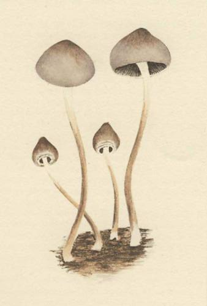
T H E S A C R E D M U S H R O O M S O F T H E N A H U A
They say that it helps 'good people' but if someone who is bad eats it, 'it kills him or
makes him crazy.' When they speak of 'badness' they mean 'ceremonially unclean'. (A
murderer if he is ceremonially clean can eat the mushroom with no ill effects.) A person
is considered safe if he refrains from intercourse five days before and after eating the
mushroom. A shoemaker in our part of town went crazy about five years ago. The
neighbours say it was because he ate the mushroom and then had intercourse with
his wife.
• When a family decides to make use of the mushroom they tell their friends to bring
them any they see, but they ask only those whom they can trust to refrain from intercourse
at that time, for if the person who gathers the mushroom has had intercourse, it will
make the person who eats it crazy.
Usually it is not the sick person nor his family who eat the mushroom. They pay a
'wiseman' to eat it and to tell them what the mushroom says. (He does so with a loud
rhythmic chant.) The wiseman always eats the mushroom at night, because it 'prefers to
work unseen'. Usually he eats it about nine o'clock and it starts talking about a half an
hour or an hour later. The Mazatecs speak of the mushroom as though it had a personality.
They never say, "The wiseman said the mushroom said..." They always quote the mush-
room direct.
The wiseman always eats the mushroom raw; "If anyone cooks or burns the mush-
room it will give them bad sores." There is no specified number of how many he should
eat, some wisemen eat more than others, usually they eat four or five. If he eats a lot, it
'wants to kill him'. At such a time the wiseman falls down unconscious, and comes to
little by little as the other people in the room 'pray for him'. This may also happen 'if
he has had intercourse too recently'.
When all goes well, the wiseman sees visions and the mushroom talks about two or
three hours. "It is Jesus Christ himself who talks to us!" The mushroom tells them what
made the person sick. He may say the person was bewitched; if so, he tells who did it,
why, and how. He may say the person has 'fear sickness'. He may say it is a sickness
curable by medicine and suggest that the person call a doctor.
More important, he will tell whether or not the person is going to live or die. If he says
he will live, then "he gets better even though he has been very sick". If he says he will die,
then the family start making arrangements for the funeral and he tells who should inherit
his property. (One of my informants admitted, however, that the mushroom occasionally
makes mistakes.)
One of the "proofs" that it is "Jesus Christ himself" who talks to them is that anyone
who eats the mushroom sees visions. Everyone we have asked suggests that they are seeing
into heaven itself. They don't insist on that point, and as an alternative they suggest that
they are seeing moving pictures of the U.S.A. Most of them agree that the wisemen
frequently see the ocean and for these mountain people that is exciting.
I have asked what the wiseman looks like while under influence of the mushroom.
They say that he is not sleeping, he is sitting up, with his eyes open, "awake". They
say he does not drink liquor at the time, but that he may in the morning. Some of them
go right out to work the next day, but some stay home and sleep "because they have been
awake all night".
243
Although we have never been present when the mushroom was eaten, we have ob-
served the influence it has on the people. One of our neighbors had tuberculosis and was
coming to us for medical help. Then one night they called in the wiseman to eat the mush-
room in his behalf. It told them that he would die.
The next day the patient no longer had any interest in our medicines; instead he began
to set affairs in order for death. He quit eating solid food, restricting himself to corn gruel.
About two weeks later he refused even gruel, accepting only an occasional sip of water.
A few days later even water was rejected. In less than a month after he had consulted the
mushroom he was dead.
Another neighboring family had a series of sicknesses. They consulted the mushroom
for their twenty-two year old son. The mushroom said he would get better, and he
did. When their eighteen-year old daughter became ill, they consulted the mushroom.
It said she would get better and she did.
Then the ten year old daughter became ill. The mushroom said that this one would
die. The family were amazed because her illness had not seemed serious. Of course they
were grief stricken, but the mushroom said, "Don't be concerned, I'll take her soul
to be with me." So, following her mother's instructions the little girl prayed to the
thing talking to her, "If you don't want to cure me, take my soul." A day or two later
she was dead.
- Not all the Mazatecs believe that the mushroom's messages are from Jesus Christ.
Those who speak Spanish and have had contact with the outside world are apt to declare,
"It's just a lot of lies'."Most monolinguals, however, will either declare that it is Jesus Christ
who speaks to them, or they will ask a little doubting, "What do you say, is it true that
it is the blood of Jesus?"
I regret the survival of the use of the mushroom, for we know of no case in which
it has had beneficial results. I wish they'd consult the Bible when they seek out Christ's
wishes, and not be deceived by a 'wiseman' and the mushrooms.
In answer to your questions:
The mushroom (called si3tho3, or affectionately 'nti1 si3tho3) is brown in color and
grows biggest in June and July when the rainfall is heaviest. At that time they may be four
inches across and about four inches tall. They are still plentiful in September and October.
By March and April, the dry season, the mushroom is scarce, but small ones may still be
found.
The mushroom grows in the grass, but when people are hunting for it, they look first
in the places where cattle have been, because the mushroom is most frequently found
growing out of cow manure.
They do not dry the mushroom. If they cannot find one growing, they go without.
The person I asked doubted that it was possible to dry them. At first she thought they
would not. Then she said that maybe they could be dried, but she doubted that they
would serve as medicine that way.
I do not know that the Mazatecs ever use the mushroom in connection with a fiesta.
For the most part it is used in connection with sickness. I have heard of one other minor use
244
T H E S A C R E D M U S H R O O M S O F T H E NA H U A
however. They say a man may slip a piece into an enemy's liquor while he is drinking in
a saloon. If he drinks it while ceremonially unclean, he may go crazy. Or he might go
crazy because the man who gathered it was ceremonially unclean. Wishing you success
ih your research,
Sincerely,
(Signed) Eunice V. Pike
Miss Pike's letter settled one question for us. For some time we had been con-
sidering a visit to Huautla. Now we were resolved to make it. Much of her
information was of that precious kind which can only be obtained when one
speaks with the Indians in their own language on terms of long standing friend-
ship and complete mutual confidence. We could not hope to improve on her
contribution. But there were many unanswered questions. For one thing, her
mushrooms reached four inches in diameter; they could not belong to the
genus panasolus. What then were they?
In the Mazatec country there are two seasons of the year when mushrooms
should be abundant, at the beginning and at the end of the rains, in June and in
the first half of August. We decided on August for our trip. Miss Pike would
be absent then, but her colleague in Mexico City, Mrs. George Cowan, pro-
ficient in Mazatec and intimate with Huautla, would know how to help us get
there. We also were successful in exciting the interest of Mr. Weitlaner, who
agreed to accompany us. This was our greatest stroke of fortune, for with his
knowledge of the country and the Indians, at least some measure of success was
assured. Our objectives were simple: to obtain specimens of the sacred mush-
rooms, for purposes of identification and trial consumption by ourselves, to
learn about the present state of the cult, and to attend the mushroom rite.
We set out from Mexico City on Saturday morning, August 8, 1953. Apart
from the chauffeur we were four - Robert Weitlaner, whom we shall call
hereafter Don Roberto, VPW, RGW, and our sixteen year old daughter Masha.
On that day we drove through Puebla to Tehuacan, a watering resort, where
we dismissed the car and spent the night. On Sunday we took the train to
San Antonio, about two hours away, and from the mournful railroad station
reeking in the torrid heat of a semi-arid countryside we drove a mile or so in a
ramshackle bus, loaded with Spanish-speaking Indians and their worldly goods,
over the worst road in the world to Teotitlan del Camino, a bustling market
town and the stepping off place for the Mazatec country. We spent Sunday
night there, in the inn kept by Julia Martinez, a woman unforgettably obese.
Early the next morning Victor Hernandez was at the door with six animals,
five mules and a horse, all of them miserably small and thin. He was a Mazatec
245
from Huautla who spoke a fair amount of Spanish. He had come for us in
response to a telegram that Mrs. Cowan had sent to a friend in Huautla, the
school teacher Herlinda Martinez Cid. Our belongings in duffle bags and
knapsacks were soon loaded, and off we started up the steep trail into the moun-
tains east of Teotitlan. After two hours of climbing we reached San Bernardino,
a village superbly perched on a mountain spur looking back over the hot low
country that we had left behind. There we breakfasted on tortillas and beans
and then off we went again, on a long steady climb until we arrived at the
first of the passes, known as La Cumbre, perhaps 9,000 feet high. Here we
thought to stop for a bite to eat from our provisions, but Victor would not
hear of it. He said the Cumbre was a favorite spot for robbers, who would
beset the wayfarers on animals spent from the long climb and then vanish
in any of various directions down the slopes. We noticed for the first time that
Victor was armed with a revolver at his waist. Later we learned that four
robbers, many years before, had been hanged on the Curnbre, and their bodies
left swinging for months in that desolate wind-swept place. And so we hurried
on down into the next valley, and up again to a second pass, and down again,
and finally up the last steep climb into the town of Huautla, itself perched on a
mountain side at an altitude ranging from 5,500 to 6,000 feet. We had been on
the road for eleven hours through country of wild grandeur, the mountains
covered with vegetation, with only two or three thatched villages discerned in
the distance. But on the trail itself there had been considerable traffic, as strings
of animals kept passing us, laden with sacks of coffee and other produce bound
for the market in Teotitlan. Like our Victor, the drivers were all on foot,
barefoot or wearing sandals, hurrying along at a dogtrot. Their animals gave us
some trouble in the narrow way, as the beasts, stepping along, would brush
us with their heavy sacks and push us uncomfortably toward the precipitous
outer edge of the path. Victor observed our difficulty, and soon it dawned on
us that on-coming drivers were halting their animals and letting us pass. Victor
had been notifying them of our approach and bespoken their consideration.
He had not uttered a word, or so we thought. But we had read, in preparation
for our trip, about the Mazatecs, and knew that the language could be whistled
as well as spoken. Yes, in a well-modulated, penetrating whistle Victor had been
conversing about us with the on-coming muleteers, even before they would
come around a bend into view, and at his request they were letting us pass!
At the end of the day, as night was falling, we walked our animals slowly up
through the town of Huautla, across the public plaza, up the hill to the house
where Herlinda was waiting for us, standing in her door and smiling at us.
246
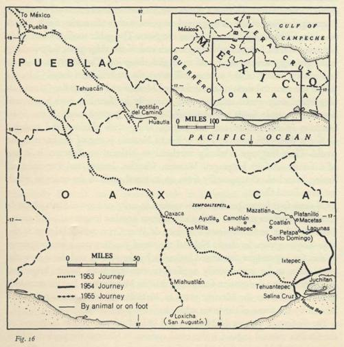
THE SACRED MUSHROOMS OF THE NAHUA
We were tired out, and the warm reception that this Indian school-teacher
cheered us with was most welcome. That night we all slept on the packed-
earth floor of one of her three rooms. Herlinda's aged mother lay moaning,
critically ill, in the front room. On the following day we rented a new, un-
occupied house nearby, paying five pesos (or fifty-five U.S. cents) for a week's
use. There we also slept on the ground, and we had our meals with Herlinda,
who stayed home from school to take care of us. From Victor and others during
our stay we heard stories of the lawlessness of these Mazatec Indians, and it is
true that no one goes abroad after nightfall, whether on the trails from one town
to another or within the town itself; and armed with their machetes the Indians
>
247
looked to us fearsome enough, when we would meet them on the road. But
the fact is that they treated us always with perfect courtesy and gentleness,
and those few whose aid we sought in confidence in our mushroomic inquiries
were most understanding in their efforts to help us.
The Mazatec Indians number about 60,000, all of them concentrated in the
mountains of north central Oaxaca. They live chiefly in villages, though some
dwell on their farms. There is a distinctive Mazatec style of house - by tradition
a rectangular roof of thatch supported on posts, with walls made of thin boards
or adobe filling in the space between the posts. The gable roofs are invariably
constructed with a thatch overhang at each end of the ridge pole, the overhang
strikingly suggestive of the ear of an English sheepdog. The Mazatecs are short
and stocky; many of the women still wear the embroidered huipil ('blouse')
that is the ancestral dress of the Indians of Mexico and Guatemala. Of animals
they breed only goats, and they live primarily by farming, with maize and
beans their staple foods, supplemented by sweet potatoes and all the fruits
common in the tropics and sub-tropics, along with chickens and turkeys.
Coffee is their cash crop, and the coffee of Huautla is one of the finest in the
world. Their language is wholly unrelated to Nahuatl or Zapotec. It is one
of a family of four languages, Mazatec, Chocho, Ixcatec and Popoloca, all
having branched off supposedly from an ancestral stock in the order in which
we have listed them.
Of these four languages, Ixcatec is spoken in only one town, Santa Maria de
Ixcatlan. Popoloca must be distinguished from another language, called some-
times Popoluca and sometimes Popoloca de Vera Cruz, which belongs to the
Mije-Zoque group. In classic Nahuatl the word popoloca was a contemptuous
epithet for any tongue considered barbarian by the Nahua, and this is how the
term came to be permanently applied to two unrelated Indian languages.
'Mazatec' is not a designation for himself that the Mazatec uses. It is the outsider's
term, derived from the Mazatec town of Mazatlan. The Mazatec is apt to call
himself by the name of the town where he is born and lives.
The distinctive feature of Mazatec, and indeed of many other languages of
the Oaxaca cultural mosaic, is the tonal system. In Mazatec the pitch at which
successive syllables are uttered is of primary semantic importance. This is
what makes communication by whistling or humming simple. The Chinese is a
tonal language too, but the 'contour' tones of Chinese are basically different
from the 'registered' tones of constant pitch in the language of the Mazatecs.
When the Mazatec muleteer initiates a whistled conversation with a friend
some distance away, the key that he adopts sets the key for his friend's answer
248
THE SACRED MUSHROOMS OF THE NAHUA
and the whole conversation follows in that key. Anything that can be said in
the language can be said whistling. Mrs. Johnson had sent by us some trinkets -
earrings, a ring, a bracelet - to an Indian godchild of hers, living outside the
village of San Andres, a few miles from Huautla. With Victor we walked
thither along the ancient mountain path. He found the Indian cottage, high
above the path. He tilted his head far back, and in a pleasant whistled discourse
explained the circumstances - certainly unusual ones for this isolated Indian
family. Soon there were signs of activity above, and down a precipitous footpath
came three women - the grandmother, the mother, and the child herself, now
sixteen. The grandmother and mother were bearing simple homespun textiles
across their forearms, a gift to send back to Mrs. Johnson in exchange for her
remembrance. None of the women knew a word of Spanish, and after a brief
conversation through Victor as our interpreter, we withdrew, the women raising
their hands, palms turned to us at shoulder level, and bowing us a friendly
and moving farewell. By Victor's whistling they had learned exactly who had
come to call and why, and they came down to greet us on the path equipped
with reciprocal gifts, not to be outdone by our courtesy. There is a curious
convention in Mazatec whistling: though women understand it and know how
to do it, a rule of behavior makes it improper for a woman to whistle in public.
Huautla is a town with several thousand inhabitants. It could not be more
beautifully situated, on a mountain side in a theater of verdant mountains,
bathed in flowers and sub-tropical vegetation, free of mosquitoes by reason
of the altitude. It is a bustling market town, full of movement and life. Yet
most of the population speaks only a tongue that, until now, has never been
written, and those few who know Spanish often know only a smattering of it. v
Most Mazatecs never sleep in a bed, rolling themselves in their sarapes on a
mat on the beaten earth in their houses. Most of them have never worn shoes.
Victor could not read time by a clock-face. Except in Huautla where there are
wheelbarrows, there is no wheeled vehicle in the Mazatec country, and until
a road thrusts itself through the mountains to this remote Mazatec world,
most Mazatecs will continue to live and die without using the wheel. How
strange to come upon a people remote from the modern world, still shut in
by their mountains and the barrier of their difficult language, where we can
see' how our own ancestors lived for most of human history, living almost
solely in and for the present, but pursuant to patterns transmitted orally from
one generation to another, a people abounding in vitality, intelligent, yet still
largely untouched by the currents of the modern world!
At breakfast on the morrow after our arrival Don Roberto and RGW took
249
Herlinda into their confidence and told her the purpose of our visit. She admitted
that she, like her neighbors, had wondered why we were coming. A close friend
of Victoria Pike and Florence Cowan, she had no faith in the sacred mushrooms,
but she said she would ask her brother-in-law, Aurelio Carreras, widower of
her late sister, to help us. He turned out to be a one-eyed Indian, about 45 years
old, the owner of two or three houses built around a patio almost next door.
He had learned Spanish from his wife, but could not read or write it. We
bespoke his help to get the sacred mushrooms for us, and he promised to do his
best, but the rains had ended prematurely and the mushrooms might be hard to
find. He warned us to discuss the mushrooms with no one.
We walked through the town. Don Roberto dropped in at a little general
store, and introduced RGW to the ancient woman behind the counter, Cleofas
Cid, an aunt of Herlinda's. When no other customers were about, he asked her
whether she could find the mushrooms for us. She told us that the curandero1 who
had officiated for the party in 1938 had died, and she knew not where to turn
for another who would accommodate us, but there was Concepcion, the wife
of a curandero who had taken to drink and gone to the dogs. She knew the mush-
rooms and would get them for us. Concepcion did not speak a word of Spanish.
- When approaching the Indians with our inquiries, we were careful to speak
of the mushrooms with the deepest respect. (After all, it was a bold thing that
we were doing, strangers probing the innermost religious secrets of this remote
people. How would a Christian priest receive a pagan's request for samples of
the Host?)
On Wednesday word reached us from the priest of the huge church on the
plaza that he would like to see us. We had already paid a courtesy visit on the
Presidente, a big, tough-looking cacique who spoke good Spanish. Now we
called on Father Alfonso Aragon. He turned out to be Indian, but Zapotec
not Mazatec, and with most of his parishioners he could not converse. (In man's
memory there had never been a Mazatec priest in Huautla.) He was curious
about our visit. We explained our interest in the old customs of the Mazatecs,
and then on his initiative he told us of the strange faith, ridiculous in his eyes,
that the townspeople placed in certain mushrooms. Lately a physician in Puebla
had asked him to forward a kilogram of them. Father Alfonso had succeeded
in laying his hands on the mushrooms, and had wrapped them up. The parcel
was still there, on the shelf in front of us, for he had lost the address of the Puebla
i. We have found no English word that renders curandero. Medicine man, shaman, witch doctor, sorcerer-
all are misleading. The curandero heals with herbs and engages in divination. Curandero is the respectful designa-
tion of which brujo is the pejorative counterpart.
2 5 0
THE SACRED MUSHROOMS OF THE NAHUA
physician. Did we care to examine them? We did not conceal our interest,
and quickly untied the parcel. Alas, as was to be expected, the contents were
reduced to a black and putrid mass.
We talked with Victor the muleteer about the mushrooms, and how we
hoped we could consult a curandero in the course of our visit, and he set off
full of promises, saying he would seek out either of two curanderos whom he
knew in San Andres.
Then we waited.
And as we waited, we picked up more and more information about the sacred
mushrooms. Herlinda talked freely with us. She knew much, though she pro-
fessed to have little knowledge and certainly she had no faith in them. Victor
the muleteer was captivated by our interest. He and Aurelio and Concepcion
would come to us separately, often after dark, Aurelio and Concepcion with
little parcels of a few mushrooms wrapped in banana leaves or a cloth, which
they would deliver to us secretively and reverently. Aurelio and Victor would
warn us to speak of the matter to no one, for it was muy delicado, Very perilous'.
This was the expression they used independently of each other, for we talked
with them always individually, but in the case of Concepcion, as she was
monolingual, we had to bring in Herlinda to interpret for us.
We learned that the Mazatecs are mycophagous and many kinds of edible
mushrooms are offered on market day in the plaza. Each has its own name and
the general word for 'mushroom' is tai3, the t being explosive and each of the
vowels being nasalized.1 But this word embraces only mushrooms other than the
sacred ones. Each of the sacred kinds has its own name, and all together they
are called si3to3. This name is invariably preceded by another verbal element so
that the normal expression is, as Miss Pike had told us, 'nti1 si3to3, the first
syllable conveying a sense of deference and affection. (The apostrophe represents
a glottal stop.) The word si3to3 means literally 'that which springs forth', and
while it is impossible for us to prove that this sense explains the name, in the
context of the sacred mushrooms it is a felicitous mystical metaphor. Victor
explained the name as meaning "that jwhich comes of itself, no one knows
whence, like the wind that comes without our knowing whence nor why" - que
viene por si mismo, no se sabe de donde, como el viento que viene sin saber de donde ni
porque. The word is saturated with mana: it is uttered in a whisper and Victor
was loath to pronounce it at all; when he had to use it, he would substitute a
gesture - his gathered fingers making an eating motion before his mouth.
In the Mazatec language there seems to be no name for the occupation of the
I. The superscript digits in Mazatec words indicate the pitch, V being the highest and '4' the lowest.
251
shaman or curandero. In the proper context one speaks of him as 'he who knows',
co'td'ci'ne'. Only on his advice should one eat the sacred mushrooms. The
curandero himself does not necessarily gather the mushrooms; others may do
this for him. Nor is the gathering attended by prayers and vigils. But according
to Concepcion the best time to find them in good condition is early in the
morning "when the air is fresh" - con el fresco - a turn of phrase that reminds
us of the 'little breeze before dawn' that Jacinto de la Serna mentioned. The
best time to find them is when the moon is new - la luna tierna. According to
Aurelio, in and around Huautla there are today about twenty or thirty curan-
deros, roughly the same number as in the past, and women are as acceptable as
men in this function. Usually the curandero takes in hand the instruction of his
son or relative who will succeed him, but this presents no problem, for the
neophyte learns in two or three months. After all, it is the mushroom that
speaks, the mushroom that teaches the beginner what to say and do. The rite
of the sacred mushroom is performed only as an ad hoc consultation, and the
prevailing fee when we were in Huautla was from twenty to twenty-five
pesos, from $2.50 to $3.00. For this service the curandero must fast from noon
to noon, and drink no alcohol. He must be (ceremonially) clean, nta3co4ta4.
He begins his session between nine and ten o'clock in the evening, and does not
finish before three in the morning. But the trance leaves no unhappy after-
effects. He can work the next day, and his head is so clear that he remembers
all that he has said in the course of the night.
The curandero eats the mushrooms raw and unwashed and preferably fresh,
but he may conserve them in a dried state for as long as six months. The curan-
dero eats the mushrooms near the beginning of the seance, and at his discretion
he may offer them to the family who is in attendance or to the patient whose
fate is in the balance. Among our informants we found no one who had ever
heard of a public communal feast of sacred mushrooms. This feature of the cult,
so eloquently described by the old writers, seems obsolete. Here is an important
alteration in the old customs, and for the change two explanations suggest
themselves, either of which would be sufficient of itself. For public celebrations
the mushroom could hardly stand the competition of distilled alcohol, and the
unhappy addiction of the Mazatecs today to strong liquor is sufficient evidence
of this. But there may be another reason. We know that from the earliest times
the Catholic Church exerted itself to the utmost to extirpate the mushroom
cult, and under that threat the use of the mushroom would be driven into
hiding. Indeed this may be the forgotten but once powerful motive behind the
atmosphere of secrecy that hung over all our discussions during our brief
252
THE SACRED MUSHROOMS OF THE NAHUA
sojourn in Huautla, and what on its face looks like a reverential tabu may
be merely a legacy of persecution.
How shall we convey the sense of gravity and doom that seemed to hang
on Aurelio's words when he would whisper to us about the sacred mushrooms
in the evening ? The mushroom itself 'is speech', es habla, he would say, and it
speaks of many things, of God, of the future, of life and death, and also it tells
where to find things that are lost. One sees everything, one sees where God
is also-.se ve todo; se ve donde estd Dios tambien. These were our good friend
Aurelio's very words. We discovered that it is usual to talk of these mushrooms
in pairs. The curanderos use four kinds, and each kind has its valence, so to
speak, measuring its potency, and the curandero eats so many pairs of this kind,
and a different number of pairs of another; or in case of a shortage, he can
use two or more kinds, calculating the valence of each to arrive at the right
dose. We discovered also that each of the four kinds has various specific names,
and not all of our informants knew all of these names, but each was certain
in his own mind of his own names. It is as though in a single community of a
few thousand souls there were various oral traditions using different names,
and the traditions did not intermingle and coalesce. On the last day of our
stay in Huautla, Victor arranged for us to pay a visit to Teodoro Garcia, and
it was obvious to us from his installation and bearing that he was a 'fashionable'
curandero. He told us he was a native of Huautla, yet later we learned from
Herlinda and Aurelio that neither had ever heard of him, and Herlinda sug-
gested that he must hail from San Lucas, a Mazatec village some distance away
speaking a dialect different from the dialect of Huautla. More probably 'Teodoro
Garcia' was a fictitious name, invented on the spur of the moment. For the
Mazatec his name is part of his very being. He is loath to disclose it, for he
thereby places himself in the other person's power.
It was interesting to watch the behavior of our Indian friends as one by one
they would talk to us about the mushrooms lying on the table before us in the
shelter of our house. Victor would hold them to his nose and sniff them, and then
report how much gaz the specimens contained. Aurelio would say of the little
ones that they had a higher rating - ten tan mas grades - than the larger ones.
They would tell us how many pair were to be eaten of each kind, and the
maximum that a strong man might cope with. They told us the specific names
for each kind, and from the variety of these it was clear that the names were
euphemistic escapes, metaphors rather than names, metaphors expressing respect
and affection. As soon as our friends would leave us, we would lay out the
specimens, some to be photographed, and all of them to be either dried and
253
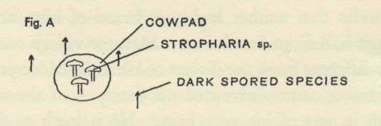
packed in cotton batting or else sealed in bottles with a formalin solution.
In the course of our expeditions to Mexico we have collected hallucinatory
mushrooms of many species, belonging to four genera. Professor Heim has de-
fined them mycologically in the Comptes rendus of the Academic des Sciences,
Institut de France, vol. 242, pp. 965-8 and 1385-95, sessions of March 12 and Fe-
bruary 20, 1956. Here we add only these notes on the kinds used in Huautla.
1. Our Huautla specimens included many small mushrooms, some with black and others
with purple-brown spores. The Indians esteem them highly and the curandero will take
up to 15 or 20 pair. They grow in pastures and in the vicinity of dung but not in dung.
They belong to various species but the Indians do not distinguish among them myco
logically. In Spanish they are called angelitos; in Mazatec 'nti1 si3tho3 ni4se3'4, of which
the distinguishing final element means 'bird'.1
2. Stropharia sp. This is the largest of the hallucinatory mushrooms used in Huautla, and
the least esteemed. It grows directly out of cow's dung. In Spanish it is called the honguillo
de San Isidro Labrador, the little mushroom of St. Isidore the Plowman. In Mazatec, Concep-
cion called it the sacred mushroom of the bull's dung, 'nti1 si3tho3 y'e4le* nca*ha*. Concep-
cion added that inasmuch as these grow in dung and the first kind around but not in dung,
people say in Mazatec that these two kinds talk to each other. (See Fig. A).
3. Psilocybe sp. This is an ochraceous spored agaric. It is called in Mazatec 'nti1 si3tho3
fe/35V, the 'landslide'.
"4. We were told repeatedly that another kind of mushroom growing on dead or dying
trees is used, but we saw no specimens nor could we arrive at the native name.
As the days went by we felt increasingly disappointed that we were not amass-
ing an abundance of the sacred mushrooms. The early ending of the rains had
made them scarce. RGW depleted our precious store by eating three of the small
ones and one of the large, but more could not be spared. Bitter to the taste,
they were not sufficient to cause psychic symptoms.
We were even more disappointed by our inability to meet any of the curan-
deros and to engage one to perform the ritual for us. Our Mazatec friends seemed
slow to bring us into contact with them. Apparently the initial pourparlers
had to be conducted through an intermediary. At any rate, for days no one
I. In Mazatec words the apostrophe represents a glottal stop. In sttto^ the letter Y has the same value as in Eng-
lish, the value that linguistic specialists conventionally represent by 'th'. Cf. spelling of this word in Miss
Pike's letter.
2 5 4
PLATE XL
Ceremonial mushrooms.
i. Psilocybe mexicaiia Heirn. 2. Stropharia cubensis Earle.
3. Psilocybe cxrulescens Murr. var. maxatecorum Heirn (in dried state).
Water-color by Michelle Bory.
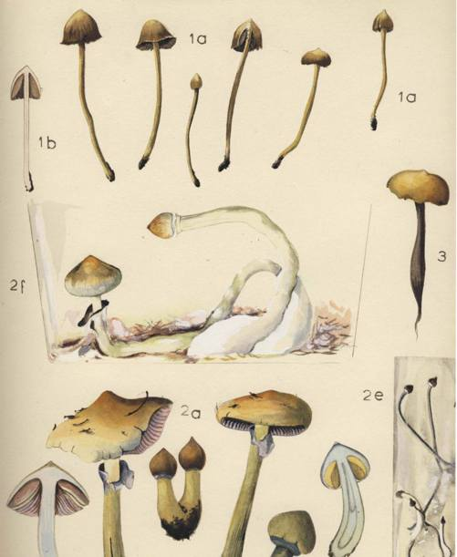
PLATE XLI
Accessories to the mushroom rite.
Pisiete, candil, kernels of maize, amate, guacamaya feathers, cacao beans,
tapers, eggs (chicken and turkey), and sacred mushrooms.
Water-color by VPW.
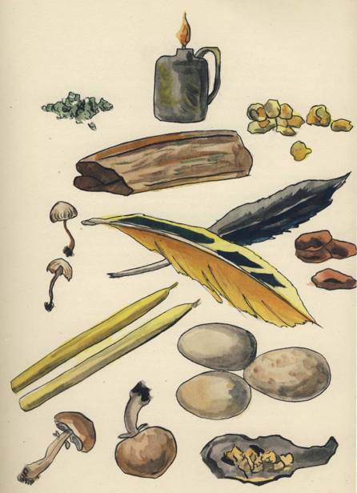
THE SACRED MUSHROOMS OF THE NAHUA
gave us so much as the name of one, and our friends spoke of them like real but
rather mysterious characters who forever remained off stage. Here again there
is perhaps a legacy of the era of persecution. Twice Victor disappointed us.
He announced to us that first one and later another curandero of San Andres
would minister to us, for a fee somewhat larger than the standard one. In each,
case the curandero failed to keep the engagement.
To justify the ministrations of a curandero, the suppliant must present a specific
problem on which he needs the advice of the divinatory mushroom. We had
resolved that our problem lay in our anxiety over our 18 year old son Peter,
working in an industrial plant outside Boston, from whom no news had reached
us (naturally enough) since we had left home a few days before. This was not a
good excuse, but it was the best we could conjure up and it seemed legitimate
to our Indian friends.
Our itinerary was going to compel us to leave Huautla not later than Sunday
morning the i6th. Saturday came, and we still had failed in our efforts to engage
a curandero. At that point a brilliant idea came to Don Roberto: was it possible
that Aurelio himself, our one-eyed Indian friend, was a co4ta*ci*ne4 ? Hardly
had Don Roberto advanced this conjecture than Aurelio himself came into
view, his sarape over his shoulder, approaching us discreetly with that quiet
measured gait that by now we knew so well. We felt indebted to him for all
he had done for us. Now the big test was to come. We chatted with him, and
then, quite casually, Don Roberto asked:
"And tell us, Aurelio, when you give treatments [hace curaciones], are they
successful?"
"Yes", he answered, "always."
For days we had been talking with a curandero all unawares.
Don Roberto went right on. "Will you help us tonight?" Aurelio hesitated.
He needed time to think the matter over. Why was he undecided? Was he
perhaps ceremonially unclean? Was it because we were aliens to him and his
people? Or was it because Herlinda's mother lay dying in the house and he
was not in the mood? He went away and consulted Herlinda. This she told us
later, explaining that her mother's condition was what had held him back,
but she had advised him that we had come from afar, in need of the secret
of his people, and he should help us. He came back to us, and told us to be ready
at 9 o'clock in the evening. Then he went on to explain to us that different
curanderos had different styles in performing the ritual. Some chant and sing and
even shout. His own style, he said, was simple: he always remained composed
and never raised his voice. But the mushroom speaks only in Mazatec, and he
255

would have to have his son Demetrio with him. to interpret the mushroom's
words for us. Before leaving us he obtained our assurance that we would
discuss the matter with no outsiders in Huautla.
On the dot of 9 o'clock that evening Aurelio called for us, just as the last
rays of daylight were vanishing. He led us by a short-cut across a corn patch
or milpa to his houses, and we entered the door that he led us to. For hours
we were to remain in the little room, perhaps eight feet square, where we now
found ourselves. In front of us was a kind of shelf or mantel or altar. On the
right there was a crudely carpentered wooden bedstead. Under it lay two small
children, Aristeo and Julia Elvira, sleeping on a mat. Someone gently pulled the
mat with them on it over the dirt floor to the other side of the partition that
bisected the house. We were four in our own party. Then there was Aurelio and
his grown-up son Demetrio (Figure B, i), and Demetrio's young and pretty
Fig. B
wife Clara (2), who lay on the floor in her clothes and wrapped in her sarape,
and who seemed to doze through the night. Next to her lay her baby, born
on June 4 and still nameless, for she was as yet unbaptized. Clara seemed to
doze, but when her husband Demetrio faltered in translating the words of the
mushroom, she had a way of interposing the Spanish words that he was seeking.
We were eight in all, with the two children around the corner making ten.
The setting for us' strangers had its unusual aspects. Throughout the long cere-
mony the only illumination inside the room came from tapers or an oil wick,
and sometimes from a single taper, and for more than an hour we sat in complete
darkness and silence. The air grew foul, for the bean-eating Indians are not an
inhibited people. After n o'clock a terrifying rain storm with thunder and
lightning broke on Huautla, and through the knot-holes and chinks of the
flimsy board walls of our hut the lightning would suddenly reveal every detail
of the room and the huddled figures in it. After the storm ended there was
more excitement. A shot was fired in the night and Demetrio cried out, " Un
homicidio" -a murder! Then there was the running of naked feet in the path
256
THE SACRED MUSHROOMS OF THE NAHUA
outside our house, a loud knocking at a door not far away, and three more shots,
but not a single human voice. Throughout the storm and the shooting Aurelio
proceeded deliberately with the ritual.
With Aurelio's permission Don Roberto and RGW were taking notes, Ro-
berto's being especially full and accurate. The following description is based
on the notes that we both took. The successive steps seemed interminable, so
slow were they, but each was executed with nice care for detail. There were
knots to be tied, and then Aurelio sought the aid of his son, doubtless because
his single eye made the tying too difficult. We shall describe the ritual as ac-
curately as we can, and analogies with other religions may occur to the reader
at certain points, especially when the mushrooms are consumed. But need we
warn him that such analogies and correspondences are superficial; Students
of religious rituals often observe similar gestures and acts in unrelated religions.
The similarity is accidental. A given ritual is stamped with meaning by the
myths, the theology, the creed, the emotional responses, the whole cosmology
peculiar to the culture that has evolved it. The ritual of the divinatory mushroom
must be interpreted against the background of all the religious beliefs and
practices of the Indians of Middle America, an absorbing subject far too complex
and difficult for us to cope with. Though we could not enter into the subjective
associations that the ritual evokes in Mazatec believers, it was easy for us to
perceive the mystery that bathes each successive step in the ceremony. For us
as mycophiles and ethno-mycologists it was a stirring event to see our Mazatec
curandero reverently raise the mushrooms from the cloth, pair after pair, a
mushroom in either hand held by the stipe; and then see him eat the pair,
first one and then the other, beginning with the pileus and then the greater
part of the stipe, masticating each mouthful of the fresh raw mushroom a
long time and then swallowing it, and depositing the stub of the stipe carefully
in a piece of paper on one side. Yes, the curandero eats first one mushroom and
then the other, holding one of the pair in either hand, exactly as the illustrator
represented the act in the Magliabechiano manuscript. What we saw confirmed
the meaning of that picture. What we saw was consistent with the hearsay
accounts of the ritual handed down to us by Motolinia and Jacinto de la Serna.
It confirmed in all essentials the account given by the late Jean Bassett Johnson
of the performance that he and his party attended in Huautla on the night
of July 16, 1938, fifteen years and one month before our experience.
Jrlere then is the order of the ritual of the divinatory mushroom as we witnessed
and recorded it in Huautla de Jimenez. Our drawings were made by Robert
257
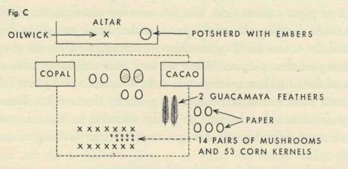
Weitlaner, and we are grateful to him for allowing us to use them and his
notes. Our plate in color giving an impressionistic grouping of the accessories
of the rite was done by VPW.
Though the room has a kind of altar, the entire ritual takes place on the floor,
with Aurelio seated most of the time on a small, low stool (Figure B, 4). Later,
when he consumes the mushrooms, he is kneeling on his folded sarape. In
front of the altar and slightly to the right of center, he begins by laying a sack
on the ground, and on it a square of cheap yellow sateen, and on top of this
another layer of heavier material, dark blue, probably from a rebozo or shawl (3).
We are lighted at first by a wick in an oil tin. Someone brings in a few glowing
embers, which are placed in an old potsherd on the ground between the altar
and the blue material. From first to last, except for the utterances and the long
silences, the ritual consists of the ceremonial handling of accessories that are laid
out on the blue cloth. Of these accessories all save the mushrooms can be seen
for sale in the market place every day and are familiar to students of Middle
American religious practices. These accessories are:1
1. Lumps of copal, a pale resin used as incense.
2. A handful of cacao beans.
3. A handful of maize kernels. (The precise number in our case is 53.)
4. A heap of pisiete - ground green tobacco.
5. Four hen's eggs.
6. Two speckled guajolote (Mexican turkey) eggs.
7. Two brilliant feathers of the guacamaya bird, a kind of parrot.
8. Six rolls of bark paper, called amate.
Also tapers of virgin wax.
These with fourteen pair of mushrooms make up the accessories, and initially
i. One of the curanderos in San Andres had told us through Victor that, in addition to the other accessories, we
should provide a chicken. This suggests the possibility that some curanderos sacrifice a fowl during the rite.
2 5 8
they are laid out on the blue material as shown in Figure C. Aurelio takes a
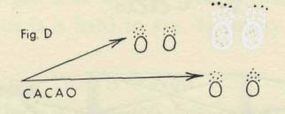
THE SACRED MUSHROOMS OF THE NAHUA
long time to arrange all this. He counts the mushrooms and the cacao beans,
and then places five cacao beans next to each hen's egg and 13 next to each of
the two turkey eggs. He divides the maize kernels roughly in half, picks up half,
shakes them from hand to hand, casts them on the cloth, contemplates them,
repeats the same steps with the other half, and separates out the two grains that
he says are the Wasson children. He asks whether we are in agreement with
what goes on and we say yes. He casts the kernels again, and a third time.
Speaking of Peter, Aurelio says, in Demetrio's translation, "Estd, pero iquien
sake donde esta?" - He is, but who knows where he is? It is now 10.15 o'clock.
To each of us he gives a piece of copal to hold in a clenched fist, and to VPW
he gives two, one for Peter; then on his bidding we toss the copal into the embers
glowing in the potsherd.
Aurelio kneels on his folded sarape, crosses himself, invokes the Trinity
and some of the saints, takes a pair of mushrooms, holds them briefly over the
burning copal, and begins to chew them. Now only a single taper is burning,
aided by light from the embers. After chewing for a time, he swallows, and
then does the same with the rest of the mushrooms, pair by pair, until 14 pair
are consumed. He finishes eating them at 10.30 o'clock. He has now eaten u
pair of the large ones and three pair of the others. Having finished the mush-
rooms, he binds his head tightly in a kerchief.
Throughout the night Aurelio's utterances are in a conversational tone,
in Mazatec for the most part but toward the end in Spanish. VPW, being
a physician, has arrived in Huautla equipped to examine the curandero during
the performance with stethoscope, thermometer, blood-pressure gauge, and
ophthalmoscope. Now that the moment has come, for many reasons each
alone sufficient it seems hardly wise to inject these extraneous and exotic utensils
into the proceedings. Aurelio breathes heavily and audibly, and his single eye
often disappears for long stretches behind its closed lid. Aurelio's whole de-
meanor expresses concentration of mental effort. From first to last he manifests
no unmistakable symptoms of trance or inebriation, but by this we do not
wish to be understood as denying psychic effects from the mushrooms. Here
is a matter that calls for serious study under controls.
Immediately after consuming the 14 pair of mushrooms Aurelio takes the
259

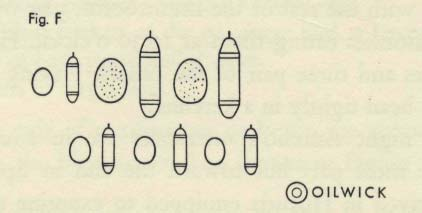
amate, rips off a part o£ a guacamaya feather, places it on the paper near the edge,
and along with 13 cacao beans wraps it tightly in the paper, the end of the feather
extending beyond the paper wrapping. He makes a neat little bundle, which
he ties up with cotton threads that Clara has been preparing for him (Figure
E). He puts the parcel by the side of one of the turkey eggs. He repeats this
with a second parcel and the second turkey egg. He puts the eggs back where
they have been with the two parcels lying between them. Then Aurelio makes
four smaller bundles, cutting out small rectangular pieces of amate, wrapping up
in each one the piece of feather and five (instead of 13) cacao beans. The six
parcels and the eggs are now disposed of as in Fig. F. We assume that the inebriat-
ing mushrooms are producing the desired effects while Aurelio busies himself
with these duties.
Aurelio rolls up his sleeves, takes the pisiete or finely ground green tobacco,
rubs it on his forearms, then on his exposed belly, the top of his head, and the
back of his neck. He takes matches and places them beside the eggs. He picks
up the kernels of maize and casts them with the right hand. He pauses as in
thought, breathes deeply and audibly. He rises and then sits down on the stool,
wrapping his sarape around him. He sits in thought. He asks where Peter is,
and RGW replies that Peter is in Boston. It is now 11.05 o'clock.
Aurelio rises and goes to the dark corner near the door, where he sits down
260
THE SACRED MUSHROOMS OF THE NAHUA
on a chair. The last waxen taper is now extinguished and we remain in complete
darkness until 1.05 o'clock in the morning. The storm breaks on Huautla.
Aurelio spits on his hands and rubs them together. He asks where we left Peter,
in whose house. We tell him. He asks if it is agreeable to us that he should ask
these questions, and we say yes. At about this time the shooting and the running
by our hut take place.
Wrapped in his sarape, Aurelio sits on his chair deep in thought. He asks a
series of simple questions about Peter, says he has trouble seeing Peter because
he is so far away in a city big and strange. Finally he says that Peter is alive but
'they' are reaching out for him to send him to war. Possibly 'they' won't
'get' (= aganar) him, but it is hard to say. Germany seems to enter into the
situation.
Then Aurelio declares that Peter is in New York, not in Boston; that Peter's
thoughts are on us, that he is in a turmoil, that he is well but in a difficulty that
he can hardly cope with, that his thoughts are on us to the point of tears, that he
is stumbling, that he is not used to this difficulty where he finds himself, and
does not know how to go about writing us about it. Then Aurelio says suddenly
that we may smoke, and the room is soon illuminated faintly by two cigars.
At about this point VPW and Masha, tired and sleepy, express a wish to go
home. We have been warned by Victor that no one is ever allowed to leave
the ritual before it is done, even to the point that necessities must be performed
in the room itself with rude accommodations there provided. But Aurelio
says that he can conjure away any dangers. RGW is uncertain whether Aurelio
is referring to supernatural dangers, or the dangers on the path to the other
house. Apparently to assure their protection, Aurelio holds each of them in
turn for a long time by her right forearm, rubs the forearm with pisiete, and
takes the pulse with his thumb. (Physicians always take the pulse with the fingers,
for in the thumb there is a pulse beat that would confuse the count of the patient's
pulse.) Demetrio accompanies them through the milpa to the cottage.
At 1.05 Aurelio lights the four tapers and contemplates the flames. He gives
to Don Roberto and RGW a piece of copal each, stirs the embers in the potsherd,
asks us to throw our copal on the embers, and under his breath utters a prayer
or incantation. He asks us if we believe in one true God, and we so affirm.
He holds the four tapers in his two hands, and then asks Demetrio to hold them,
declaring then that nothing bad has happened to Peter. He asks how many are
present - "Only four?" He asks whether one o'clock has passed, and when we
say yes, he comments, "Ya es buena hora" -now a good hour has come. Then
he asks RGW whether he believes in all that is going on here. Inexperienced,
261
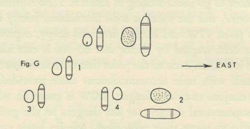
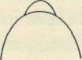
RGW begins to reply weakly that he thinks he believes, whereupon the ex-
perienced Don Roberto overtakes his words and in a deep, resonant, loud
voice declares, "Creemos". Then Aurelio declares in a sure voice that nothing
is wrong with Peter and that all goes well. A little later he says that what we
are all witnessing is "muy delicado" - most perilous, and that of course we
are not used to all this. He says that he can render treatment in absentia on our
behalf, after we leave Huautla, and in fact he recommends that we ask him to
do this. It is now 1.30 o'clock.
Aurelio mixes the maize kernels in his two hands, casts half of them and then
the other half, and then all the kernels at one time, and then all the kernels a
second time. He places one of the hen's eggs toward the left side of the cloth
and casts the kernels for the fifth time. He places one of the large eggs on the
right hand side, and points it in the direction that he says is east. He asks RGW
when he will arrive in Mexico City and whether he has a house there. He casts
the kernels again, for the sixth time, and then arranges the eggs and bundles
in the fashion indicated in Figure G. Then he declares that a relative of RGW
is destined to fall seriously ill within the year, and he gravely fixes on RGW
his single eye. It is now 1.45 o'clock.
Demetrio replenishes the supply of copal in the potsherd. Aurelio leaves the
room a moment, taking some pisiete with him. He returns and again casts the
kernels. One kernel happens to stand on end. Aurelio concentrates his attention
on it, saying it is RGW's son. Then he repeats that a relative of RGW is destined
to fall ill within the year. Then he asks RGW whether he can carry bundle no.
I to his home and keep it for 13 days, along with the corresponding egg. On the
I4th day RGW may throw them into water or bury them. Aurelio takes one of
262
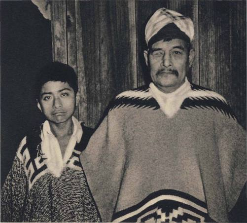
PLATE XLII. Aurelio Carreras, curandero, and his son Mauro.
Huautla de Jimenez, July 5, 1955.

THE SACRED MUSHROOMS OF THE NAHUA
the turkey eggs and to the blunt end affixes a small lump of copal, which being
hot and soft appears to adhere to the egg shell securely. He does the same with
each of the hen's eggs and finally the other turkey egg. He places the eggs and
bundles as shown in Fig. H, but immediately shifts three of the small bundles
to the places shown by the arrows. It is now 2.10 o'clock.
In another potsherd Aurelio stands the four tapers upright, and he asks RGW
to sit on the chair and roll up his sleeves. Aurelio passes the potsherd with
embers over RGW's head, along with two of the eggs and two bundles, praying
the while, and then he gives the two bundles and eggs to RGW to hold in
both his hands. He passes the potsherd under RGW's hands, and Demetrio
stirs the embers. Aurelio then passes the potsherd with copal over RGW's
head, then over the ground, then over his head and under his hands, repeating
all this several times, relieving RGW of the eggs and bundles but only to hand
him another pair of eggs and bundles; asking him then the name of his daughter
and repeating the various passes, always making all the passes counter-clockwise.
Then Aurelio empties the paper containing the stubs of mushrooms into the
fire of the potsherd. He gives this little paper bag to RGW along with a second
one, both containing now some pisiete, and he says to RGW that they contain
something good from St. Peter and St. Paul. At this stage in the night Aurelio
is speaking Spanish or Mazatec, passing from one to the other without apparent
reason, and he addresses RGW with the familiar tu instead of the formal Usted.
It is now 2.25 o'clock.
Then Aurelio gives RGW certain specific instructions. The turkey egg with
copal on the blunt end is for him, and similarly a chicken egg for VPW, each
with its respective bundle. These are to be held for 13 days, and then the eggs
must be buried with the pointed end down and with the corresponding bundle
buried next to each, perpendicularly, the bundle to be carefully placed on the
eastern side of the respective egg. In the course of the closing phases of the ritual,
Aurelio observes that pisiete is excellent for stomach troubles and that one may
eat a little of it. He himself puts something in his mouth, between teeth and
cheeks, and presumably this is pisiete.
263
At 2.30 o'clock the session draws to a close, and Don Roberto with RGW
leave the house to return to their own.
Before 7 o'clock on the following morning we were all in the saddle and
away. Aurelio and Herlinda had arisen betimes, Herlinda to serve us breakfast
and bid us godspeed. We rewarded Aurelio for his night-long vigil with us,
giving him 120 pesos or about $ 15, plus a few pesos for the cost of the accessories
that he had used in the ritual - a princely sum for him which we did not be-
grudge. These good people waved us on our way, and we shall long remember
their friendliness and help.
On our way out of the Mazatec country we spent the first night in the village
of San Bernardino, lodging with the owner of the general store, Dona Toribia
Cid de Mendes. This is the village, perched high on the edge of the mountains,
that looks far down over the low-lying plain to the west of the Mazatec country.
After we had eaten our tortillas and eggs and as we sipped our coffee and mescal,
Dona Toribia captured our attention with stories of the Mazatecs. She was her-
self a Spanish-speaking Mazatec from Mazatlan. Before long she got on the
subject of the miraculous mushrooms, and she went on and on until late in the
night about the miracles they had worked in those mountains to the east, now
sleeping in darkness, until in the end it seemed as though the very hills them-
selves, where the little mushrooms grow, were bewitched by them.
Jhlere we should prefer to bring our story of Huautla to an end, but candor
compels us to add a few more lines. Our attitude toward the divinatory perfor-
mance and especially the oracular utterances had been one of kindly condescen-
sion. We said to ourselves that it was cruel on our part to ask Aurelio, locked
up in his unlettered Indian world, to enter understandingly into the problems
of the Wassons of New York. His divinatory powers, put to this appalling test,
had seemed to us pitifully thin, but of course we had duly entered in our notes
all that he had said. In brief, he had declared that Peter was not in Boston but
in New York, that Peter was alive but in a deep emotional crisis and longing
for our help, and finally that the army was reaching out for him and might
yet get him. There was a hint of foreign military service - Germany was men-
tioned. Later in the night Aurelio predicted ominously that a member of the
Wasson family would be gravely ill within the year.
We reached home in the second week of September. In the kitchen of our
New York apartment we found the leavings of a party that during our absence
Peter and his friends had held. The bills from the purveyors supplied the date:
the weekend of August 15-16! Peter easily confirmed this when we saw him.
264
THE SACRED MUSHROOMS OF THE NAHUA
Laughingly we credited the sacred mushrooms with a hit, a palpable hit, and
then gave the matter no more thought.
Aurelio's prediction about the army had seemed badly aimed. After all,
Peter at the age of 17 had enlisted in the National Guard, and this gave him
exemption from the draft. Soon after our return to New York, RGW left
for Europe on a business trip, and late in the morning of Monday, October 3,
he arrived at the Hotel du Rhone in Geneva. There a cablegram from home
awaited him with sensational news: Peter had just made known his settled deter-
mination to enlist in the regular army for a three year term. He had come to this
decision after a prolonged emotional crisis involving a girl, and that crisis, we
now learned, had been boiling while we were in Mexico. Would RGW please
send a cablegram at once begging Peter to postpone his rash step ? RGW sent
the message but, before it reached Peter, he had signed up. The army, after all,
had reached out and got hold of him! At the moment of the October crisis our
thoughts were so far removed from Huautla that days passed before suddenly
Aurelio's pronouncement came to mind. Another hit, a palpable one indeed!
A few months later, after the usual training period, the army sent Peter
abroad for duty, but to Japan not Germany.
There remained one final prediction: grave illness was to strike the Wasson
family within the twelvemonth. (In the Mazatec world the 'family' embraces
all the kin.) This seemed on its face unlikely, for our families are unusually
small. No one of the previous generation survives. VPW had only a brother
and a sister and some nieces, as well as a few cousins and their children. RGW
had only five first cousins and four first cousins once removed. In January one
of RGW's first cousins, in his 4o's and abounding in vitality, suddenly died
from heart failure.
We record, as in duty we are bound to do, but without further comment,
these strange sequelae to our Huautla visit.
On January 14, 1954, Robert Weitlaner wrote us exciting news: his daughter
Irmgard Johnson had recently returned from a journey through the Mije
country, and in San Juan Mazatlan a curandero, through an interpreter, had told
her about two kinds of sacred mushrooms. The Mije are known as a remote
people, shut off from the world and in turn disposed to shut out the world.
Among them the mushroom cult might manifest archaic traits, and in any
case would give us perspective on the Mazatec practices. Would we care to
join him on a second pilgrimage in quest of the secrets of the sacred mushrooms ?
The proposal was too tempting to resist, and through further correspondence
265
the details were worked out for a fast incursion into the Mijeria, as the land of the
Mije is called.1 It proved impossible for VPW and Masha to leave New York,
but others were recruited to take their places. Allan B. Richardson, a friend and
photographer of New York, eagerly accepted the challenge and prepared
himself to serve as official photographer. The Summer Institute of Linguistics
consented to let Walter S. Miller join us: a professional linguist, he is the foremost
student of the Mije language and culture. For guide, Don Roberto enlisted
Francisco Ortega, known as Chico, a thirty-nine year old Zapotec living in
Tehuantepec, whose extraordinary talents and character have given him an
outstanding reputation among all who explore seriously in the remoter regions
of Oaxaca and Chiapas. He in turn engaged a boy named Filemon to help
with the animals, three horses and a mule.
Among those who know about the Indians of Mexico, the Mije enjoy a
legendary reputation. It is said of them that in the old days of Zapotec power,
centuries ago, the Mije stood off the Zapotecs, and the Spaniards never subdued
them in war. They are seldom visited. Even famous writers about the Mexican
Indians like Miguel Covarrubias discuss them by hearsay, never undertaking
the arduous journey to their mountain villages. Their language for Europeans
is of the utmost difficulty, with stress, quantity, and tone, palatalization, glottal
stops, retroflexion, and numerous consonants unfamiliar to English or Russian
ears. It belongs to a group of which the others are the Popoluca of Vera Cruz,
Zoque, and the dying or extinct Tapachultec. Some 60,000 in number, the Mije
live in the mountains of northeastern Oaxaca, these mountains rising to their
peak in the famed Zempoaltepetl, almost 3,400 meters high. These mountains
constitute part of the rugged massif where the Mazatecs live also, but the two
peoples are far removed from each other. By comparison the Mazatecs are well
advanced toward incorporation in the great world, and the two peoples are
separated from each other by no less than three tribes. Next to the Mazatecs
on the east live the Cuicatecs, then the Chinantecs, then a swath of Zapotecs,
and at last come the Mije. To the east of the Mije he their kin the Zoques in
Chiapas and the whole world of the Maya. For us it might prove significant
that this people shut off from the world had always been a culture contiguous
with the Maya tribes. The reputation of the Mije is that while not aggressive
they are uncommunicative with outsiders and even surly. For the most part
they live at altitudes below 1,500 meters, and their mountains are clothed in
i. We use the spelling 'Mije' rather than 'Mixe', favored of scholars, because the value of the 'j' is that of standard
Spanish, whereas 'x' in Mexico represents any of three consonants. The Mije must not be mistaken for the
unrelated Mixtecs, of course.
2 6 6
THE SACRED MUSHROOMS OF THE NAHUA
tropical vegetation and abound in wild life. They live on maize and beans,
chickens and turkeys, and they sell to the outside world a small amount of good
coffee. In all of the Mijeria there is not a single road for wheeled vehicles.1
On Friday, May 21, RGW flew to Mexico City with Allan Richardson.
On the following day, by the gracious generosity of the Banco Nacional de
Mexico, the bank's De Havilland Dove with Captain Carlos Borja piloting
lifted us to the airstrip at Ixtepec in the Isthmus, having stopped at Oaxaca on
the way to pick up Walter Miller. At Ixtepec we met Don Roberto and Chico.
After laying in some provisions at Ixtepec and Juchitan, we drove by car east-
ward along the Pan American highway, then north on the Trans-Isthmian
highway, and finally westward down an execrable road through Laguna to
Santo Domingo Petapa, a stretch of about fifty-five miles. This Zapotec village
was our stepping-off point. Next day we set out for San Juan Mazatlan, some-
times called Mazatlan de los Mijes. After a long day we spent the first night
sleeping in the school house at Platanillo. Then followed another long day of
slow progress up mountains and down, and across arroyos. We slept the second
night in the forest, and the following day shortly after noon we entered Maza-
tlan. From Platanillo to Mazatlan we had met only four Indians and had not
seen a single habitation.
We happened on Mazatlan during the annual fiesta in honor of the Virgen
de la Soledad. The village was thronged with Indians bedecked in their finest
garbs and there was much music, dancing, and drinking. The thatched
houses of the village, perhaps two hundred in number, are strung along the ridges
of radiating mountain spurs, the mountain sides themselves being clothed in
tropical vegetation and alive with brilliantly colored and highly vocal birds.
On all sides the distant horizon is closed in with superb mountains. The altitude
of the town is about 3000 feet.
We made our way to the Municipio, where we found the Presidente, the
Secretario, and the Sindico busily engaged in supervising the progress of the
fiesta. They received us with reserve, but after we showed our credentials they
informed us that we might occupy the curato, the house that would belong to
the priest if there were one, a one-room thatched adobe structure adjacent
to the thatched church. This suited us admirably, and there we stayed for six
I. There exists one excellent study of the Mije and their culture, Ethnology of the Western Mixe, by Ralph L.
Beals, University of California Press, 1945. Being of Anglo-Saxon origin, this excellent and respected ethno-
logist naturally failed to inquire about the role of mushrooms in theMije culture. The divinatory cult complete-
ly eluded his attention. He dealt only with the western Mije, in Ayutla and thereabouts. The Popoluca-Zoque
cultures were described by Frans Blom and Oliver La Farge in Tribes and Temples, Tulane University,
Louisiana, 1926. They also seem to have made no ethno-mycological inquiries.
2 6 7
days while we pursued our inquiries and took photographs. Allan Richardson
with his cameras proved a sensational attraction for the Indians, whose reserve
broke down as they besought him for retratos or 'portraits', and paved the way
for our inquiries. We found that there were eleven curanderos in Mazatlan,
four of them women. We talked with four of the men. Don Roberto and RGW
called on one of the oldest, Francisco Policarpo, in his home, where we found
him reclining in his hammock. He knew no Spanish, and through a feeble
interpreter we finally learned that in his practice he had long since given up
the use of mushrooms, relying instead on a certain bejuco, a plant of some kind,
either a creeper or a climber, perhaps the ololiuqui. We also visited the curan-
dero from whom Irmgard Johnson had learned in January of the use of the
divinatory mushroom among the Mije, a discovery for which priority goes
to her. She had known him as Francisco Jose, but with us he was Francisco
Claudio. He remembered Mrs. Johnson's visit well. He spoke almost no Spanish,
and his brother Alvaro was to interpret for us, but Alvaro was so sullen that
our interview was a failure. We were fortunate, however, when another of the
curanderos, Manuel Agustin, came to us with various ailments for treatment:
Walter was skillful with massage and manipulation, and also relieved his pains
with analgesics, whereupon the old man answered patiently all our inquiries.
The Vocal of the town, Felipe Luciano, a leading citizen, also proved friendly,
and persuaded the curandero Timoteo Quirino to discuss mushrooms with us.
In addition to these local informants, we were the beneficiaries of a windfall, a
delegation from another Mije village of whom we shall speak later.
The divinatory mushrooms play a role among the Mije as important as
among the Mazatecs, with many similarities and many important differences.
Like the Mazatecs, the Mije always speak of these mushrooms in pairs. For
'pair' they use in their language a word borrowed from Spanish, casada, which
is invariable as to number and which in Mije is used only when 'pair' means
a couple of opposite sexes. Here then is evidence suggesting that in the Middle
American mushroom cult, the habitual pairing of the sacred mushrooms car-
ries a sexual connotation. For this there is support also in a folk tale from the
town of San Lucas Camotlan, which we shall recount shortly. But we must add
that in Mazatec the word for a 'pair' of mushrooms, nka2, has apparently no
sexual association.
In Huautla our curandero, as he ate the mushrooms, bit off the caps and all
but the butt of the stipes, chewing them thoroughly and then swallowing
them. Among the Mije this is done differently. The caps are severed by hand
from the stipes; the stipes are firmly attached to the caps and, for their size,
268
THE SACRED MUSHROOMS OF THE NAHUA
tough. The stipes are put back into thcjicara or gourd bowl, while the caps are
quickly swallowed, without chewing, one after the other. If the mushrooms
do not take effect, then the suppliant addresses a prayer to the stipes in their
jtcara, and eats more caps. Afterwards the jicara with the stipes is carried to a
nearby cross and there, reverently, the stipes are spilled out as an offering,
and a vela is lighted. All of our informants stressed the separation of the caps
from the stems and the separate use of each.
The mushrooms come only during the rains of June and July, and they can
be kept in a dried condition for only fifteen or twenty days. This limits their
use to a short season. We arrived unhappily before the rains and we saw no
specimens, nor could we see them in use. We were told that in the hot low
country the mushrooms do not grow. The atmosphere of secrecy about the
mushrooms that was so striking in Huautla is less heavy in Mazatlan, perhaps
because this remoter people had never come under such close control by the
ecclesiastical authorities. Indeed, there seemed no particular reluctance to discuss
the mushrooms. On the other hand, the mushrooms are consumed in private,
in the dead of night, if possible under conditions of absolute quiet, usually
with only two persons present, the one who eats them and another. As in the
Mazatec country, among the Mije we discovered no trace of a communal agape
such as the early writers described.
In Huautla the curandero eats the mushrooms on behalf of his patient or client.
Here lies the vital difference with the Mije. For in the Mije country the curan-
dero never eats the mushrooms, except as he himself may wish to consult them.
The sick person eats them, or the person who seeks tidings of absent relatives
or help in finding lost and stolen property. Among the Mije the divinatory
mushroom carries no hieratic attributes; it is secular. Everyone knows how to
use the mushroom and the curandero is not usually a party to the performance.
Like the Mazatecs, the Mije possess a general term that embraces all of the
divinatory species, but unlike them the Mije consider these species as a subdivision
of the order of mushrooms. In Mije the word for 'mushrooms' is mus, and the
collective word for all divinatory mushrooms is na :swin mus, of which the first
word means the World, the Universe. This word enfolds a curious figure of
speech: na:s means 'ground' and win means 'eye'. (Here and in other words the
colon means that the preceding vowel is long in quantity.)
Manuel Agustin, an old man, disclosed to us a surprising fact: for na:swin mus
there is a synonym, tu:muh. Our friend Felipe was helping Walter as our
interpreter with Manuel, and Felipe changed the word to tu:m 'ungk, which
another elder of the town, Geronimo Antonio, later confirmed. They and
269
others knew the word and its meaning, and they all agreed that its inner sense
was 'that which is born of itself', lo aue nace por si mismo. Here is the same figure
that we find in the Mazatec si3to31 Tu:m of itself means nothing in Mije and
occurs elsewhere only in the distinctive Mije calendar of day names, where in the
complicated rotation of the native calendar it might turn up in the combination
tu:m 'uh. The term seems to be an archaism, with mystical implications that will
have to be explored by further study.
Both Manuel and Timoteo agreed that there are three species of divinatory
mushrooms, and their descriptions tallied also:
1. pi:tpa, 'thread-like', the smallest, perhaps two horizontal fingers high, with a cap
small for the height, growing almost anywhere, often by the side of the mountain trails.
Where one is found more should be sought. The cap is yellowish above and blackish
below, and hemispherical.
2. atka:t, 'alcalde' or Mayor; like the pi:tpa but bigger, three or four fingers high,
with a flatter cap.
3. kong or kongk, the 'chief or 'head-man', which is the biggest, perhaps eight fingers
high with a stem % inch in diameter, the color of the' cap being more yellow than
the others.
Our informants agreed that the three kinds differ as to species and not merely
in age. They agreed that these mushrooms, eaten raw (either fresh or dried),
have an agreeable odor like flowers. The taste is like nothing else. One in-
formant said that in the throat they felt like soda water. As for the dose, every
man figures it out according to his tolerance for mescal. Of the pi:tpa, some
take six pair, but others take eight, ten, or even twelve; of the atka:t, from
three to six pair; of the kong, if two mushrooms are available, one eats around
the edge of the two caps; but if only one is available, then one entire cap.
Anyone may gather the mushrooms. On finding them you may send a sigh
of thanks to God, but this is as you please. On the evening when they are to be
eaten, toward nightfall, you carry them in ajicara to the church. If the church
is locked, you seek out the fiscal or mayordomo and he opens it for you. On the
altar you place the jicara with the mushrooms, and burn copal or incense, and
either one vela or three. You invoke God's blessing and his permission to consult
the mushrooms, and you promise him alms, one peso or two or two and a half.
Then you bear the mushrooms to the house. A house on the edge of the village
is best, where all will be quiet. You place the mushrooms in the jicara on the
ground before the household altar, with one vela burning. Someone now goes
back to the church with the promised alms.
The person who is to eat the mushrooms has been on a ceremonially restricted
270
THE SACRED MUSHROOMS OF THE NAHUA
diet for four days. According to Timoteo, for four days you cannot take coffee
or liquor, nor eat of any fowl, nor eggs, nor anything fat, nor flesh of pig.
But you may eat beef and beans and maize (tortilla and atole), and cheese. During
this period you must have no carnal relations. On the morning of the appointed
day you may breakfast on the fourth part of a tortilla, a little atole, and a bite of
cheese. From then on you fast, eating no lunch or dinner or supper, so that you
eat the mushrooms on an empty belly, barriga vacia. Then for the four ensuing
days you are on the same diet. A woman with child must never take the mush-
rooms, for she is sure to go raving mad for good, but they cause no abortion.
Our informants were ready with specific instances where this person or that
had gone mad for breaking the rules. There was that woman in Platanillo,
for example. Being ill, she took the mushrooms, and then, feeling better, she
ate chicken forthwith, whereupon she went mad. That was around 1947. She
wandered raving through the Mijeria for a long time, until finally she disap-
peared in the mountains. If a woman with child needs to consult the mushrooms
she may take them vicariously, a relative or friend eating them for her.
The reader will observe that the Mije sense no impropriety between the
ancient cult of the divinatory mushroom and the cult of the Christian God.
In Mazatlan the pagan and the Christian legacies - the latter a comparatively
recent innovation - seem fully blended, to a degree remarkable even for Latin
America. No priest is in residence in Mazatlan and visits by one are rare. The
Sunday services, well attended, consist of readings by a cantor, while the curan-
deros, men and women, at the very altar, under the compassionate countenance
of the Virgen de la Soledad, treat the sick and infirm and halt with prayers and
ritualistic gestures and the application of eggs to the ailing organs according
to pagan rites of great antiquity. To all this we ourselves were witnesses.
Now we return to the mushroom ceremony. It is night and you hope that
all will be quiet. You have eaten the mushroom caps, swallowing them fast,
one after the other. The stipes he in thejicara on the ground in front of the house-
hold altar, with one vela burning. You and a friend or relative are alone, the
second person to watch over you and listen to you, but he says nothing. If the
mushrooms work, they work rather fast, in fifteen minutes or a half hour.
If they don't work, then you make supplication to the stipes, and perhaps light
three velas instead of one, and perhaps then they will work. When they work,
you begin to talk and you ask questions of the mushrooms and the mushrooms
answer. You go on and on with this dialogue until the cock crows, when
the talking ends. The person who is with you hears everything but never says
anything. It is good to have a relative or friend with you. The whole performance
271
is muy delicado, not to be taken lightly. If someone happens to pass by and per-
ceives what goes on, he withdraws quietly. Afterwards you are faint and weak,
and for a time you cannot walk, but you remember all that was said.
When the mushrooms do not work one should look for either of two explana-
tions. Perhaps there was an interruption. Any undue noise, the wailing of a cat,
the braying of an ass, a child bursting in - these things are enough to put the
mushrooms off. Or again if the person eating the mushrooms has spoken ill
of them, or even thought disrespectfully of them, there will be no success.
If he is guilty of this sin, then the mushrooms cause him to see horrible visions of
snakes, tigres, and such like. But when all is well, then he who eats the mushrooms
begins by invoking San Juan, the patron saint of Mazatlan, and then says the
Pater Noster, the Credo, and the Confiteor,' and the mushrooms begin to
speak, and they are likely to answer not merely the questions put, but all other
questions too. Manuel remembers when the prayers were all said in Mije, but
now they are said in Spanish, even by people who know no Spanish. All is
according to the ordinance of God and the World, says Timoteo. Here again
the World - na :swin - appears. With good fortune a virtuous man hears music
and may see heaven. As the evening wears on, the mushrooms themselves
dictate the program, ordaining such things as the number of velas to be lighted.
In Mije the cap of the mushroom is called the 'head' - kobahk in the dialect
of Mazatlan. The top of the cap is the kopk or summit. The stipe is the tek
or leg. The edge of the cap is the 'ai, 'leaf. It will be recalled that in the case of
the kong, sometimes only this edge is eaten. The lamella or gill is pa:t. Let the
reader bear in mind that the cap or pileus is called the 'head'.
To the south of Mazatlan, ten hours away by foot, lies the Mije village of
Santa Maria Nativitas Coatlan. One of Walter's colleagues, Searle Hoogshagen,
is working there, and we had been in Mazatlan only a few hours before he called
on us. Moreover, on his bidding two Mije boys of Coatlan came too, Severiano
Sanchez, age 33, and Candido Faustino, age 25. Both of these young men proved
first rate as informants, speaking Spanish and understanding the purport of
our questions. They described vividly the effect of the mushrooms, how the
eater behaves like a drunken man, and how he carries on both sides of a colloquy,
posing questions to the mushrooms and then voicing the mushrooms' answers,
for hours on end, in the presence of a relative or friend. They also knew the
pi:tpa, the atka:t, and the kong. Of the former the dosage in Coatlan is signifi-
cant-for children, 6 pair; for grown-ups, 9 pair, or if this be not enough, 13
pair, or at most 18. The dosage jumps thus from 6 to 9 to 13 to 18. According
to native belief, the World or Universe - na :swin - is served by nine Lesser
272
THE SACRED MUSHROOMS OF THE NAHUA
Servants and by thirteen Major Servants. The nine pair and the thirteen pair of
mushrooms represent the Lesser and the Major Servants. The word for 'Servant'
is tungmi:tpa. Is it a coincidence that the Mije calendar has eighteen months,
and that the Mije week consists of thirteen days, each with its name? A number
of other native calendars in Middle America likewise divide the year into eigh-
teen months and the week into thirteen days. Dr. Borhegyi makes a further
observation. In the cosmology of the Maya there were nine gods of the Under-
world and thirteen gods of Heaven. Are not these the Lesser Servants and the
Major Servants of the World of the Mije? If so, we discover here a significant
cultural correspondence between the Mije and the Maya.
Candido and Severiano told us an extraordinary story of a recent development
in the use of the divinatory mushroom in their town of Coatlan. These boys,
cousins, have an uncle, Feliciano Faustino. In former times only the curanderos
knew the secrets of the mushrooms, but this changed in 1943, when their uncle,
Don Fehciano, took in hand a famous curandero of the neighboring town of
Santa Margarita Huitepec, by name Pe:t Murnt. (Pedro Mundo in Spanish,
'Mundo' rendering the Mije word na:swin.) One day at about three in the after-
noon Don Fehciano with mescal put Pedro Mundo into a state where he disclosed
all the secrets of the mushrooms, and straightway the whole of Coatlan learned
the story. From that day on the use of the divinatory mushrooms in Coatlan
has become general, everyone invoking the aid of the na :su>in mus when they
are available and needed. Both Don Feliciano and Pedro Mundo are still alive
and they will tell you about all this. (We do not-question the good faith of our
informants when we suggest that their story is a myth-in-the-making to explain
the secular possession of holy mysteries.)
Long before Walter Miller had heard of the mushroom cult or of us, he was
living in the Mije town of Camotlan, twenty walking hours to the west of
Mazatlan.1 There he had put down on paper the folk tales that he heard from the
mouths of the Mije, and in the course of that work he came upon tales of strange
mushrooms, some with a power to heal, and others divinatory, and others of a
kind to drive people mad for good. Here is what he heard:
I. Enigmatic but relevant to our theme is the following information supplied by Walter Miller. Just to the east
of Camotlan, in the llano, there is a hill (kopk) that the people call muzut kopk. No one recalls the origin of the
first part of this name, but it could be mus hut, 'mushroom cave'. In this hill there is a cave that the villagers
call muzut hut. The supposition suggests itself that the hill was called after the 'mushroom cave", and long after-
wards, when the origin of the name had been forgotten, the cave in turn was called after the hill. Deep in the
cave the floor is strewn with fragments of ancient pottery and other artifacts, but there are no representations
of mushrooms. A local informant has told Mr. Miller that on the top of the hill can be seen a stone shaped to
resemble a gigantic spindle whorl, malacate.
273
Of mushrooms there are various kinds. One kind has been used as a medicine, says
Jose Trinidad. His own nephew, Alefonsa, had been ill for five years with an unnamed
illness. He could not walk but moved around on a stool. He would sit in the patio and
slide the stool from place to place. Then they gave him a kind of mushroom to eat, and
he was cured and began to walk as before.
Jose says there is another kind of mushroom about which there is a belief that it will
induce a dream, a particular kind of dream, one in which two duendes or spirits appear
to the eater, one male and the other female. They talk with him, and he asks questions and
they answer. They will tell you where lost things may be found, and name the thief who
has stolen something and say where the stolen thing is. When you plan a trip, they will
tell you what luck you will have on the journey. Cerilo of Santa Margarita Huitepec
has eaten these mushrooms several times. The first time they didn't give the result. Cerilo
has a son named Delfino. When he was about to eat the mushrooms, he was afraid and so
he had Delfino watch over him. When he had eaten them, sure enough the spirits
appeared. He talked with them and asked about the trip he was going to make, for he
had five burros and was about to set out for the Isthmus with Delfino. The spirits told
him not to go for the burros would all die. They talked about different things. Then
the spirits said, 'We must go, for the cock is crowing.' The spirits disappeared and Cerilo
awoke. Straightway he asked his son if the cock had crowed and was told that it had.
But he didn't believe the spirits and went on his trip anyway. Just as the spirits had said,
all five of his burros died on that trip.
Another who used these mushrooms was a woman of Camotlan named Rosa. She was
of a family from Zacatepec who had moved to Camotlan to live. Later she lived with
her own father as his woman. He finally died in Huitepec. So Rosa ate the mushrooms
and began to tell the people that the world was coming to an end. And she began to say
that she was the mother of the Virgin. She was really deceiving the people very much.
Many folk went to her place daily and there they were all day, waning and weeping
about their sins. Then some of the younger ones who had been to school talked to
the town authorities and got them to threaten to jail her if she didn't stop it. The
authorities told her they'd run her out of town if she ate any more of those mushrooms.
Why, people were taking offerings to her and getting her to pray for them. That was in
1945. She stopped it then, but some say she seemed to go crazy and wandered around in
the woods. She died several years later.
Here end, for the present, our notes on the role of mushrooms in the Mije
culture. On Monday, June i, we set out on our return journey, and Allan
Richardson and RGW reached New York on June 5.
vv e have now brought to a close our account of the divinatory mushroom
cult in Mexico, insofar as it is known to exist today and is recorded in the annals.
Here we would stop, were it not for evidence of an order different from anything
so far mentioned, evidence that, if relevant, vastly extends the former range of
the Middle American mushroom cult both in time and space. If this enigmatic
274
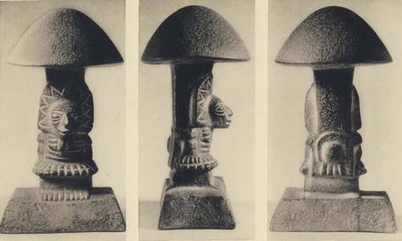
PLATE XLIII. Mushroom stone. Attributed to early classic period, Highland Maya, c. 300 A.D. to c. 600 A.D.
About 30 cm. high. Zurich, Rietberg Museum.
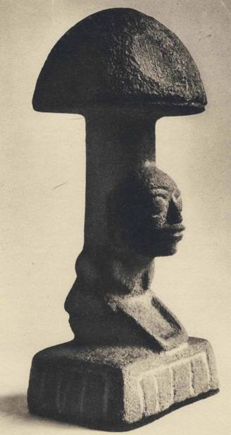
PLATE XLIV. Mushroom stone. New York, Collection of Hans Namuth, Esq.
THE SACRED MUSHROOMS OF THE NAHUA
evidence really relates to mushrooms, as we believe it does, a cult of the
sacred mushroom goes back among the highland Maya of Guatemala at least
to B.C. 1000, and in that area persisted for close to 2,000 years, until the archeo-
logical evidence fades out in what is known as the late classic period, around
A.D. 900.
On September 9, 1952, Dr. Hans Mardersteig of Verona wrote us that he had
observed in the new Rietberg Museum of Zurich a curious stone statuette,
about one foot high, representing a mushroom with a human face carved in
high relief on the stipe. The Museum attributed this artifact to Middle America
but seemed to know no more. It had come to the Museum as one of many
items in the collection of a private donor. With this letter and this artifact
our inquiries into Middle American ethno-mycology began. We reproduce
photographs of the remarkable Rietberg mushroom stone.
By almost the same post Robert Graves sent us a cutting from a pharmaceu-
tical publication1 referring to the i6th century use of an inebriating mushroom
among the Indians of Mexico. This was our first intimation of a mushroom
cult in Mexico. At once we embarked on a double-barreled inquiry, pursuing
on the one hand the secret of the mushroom stone and on the other hand the
cult of the mushroom in Mexico.
From Dr. Gordon Ekholm of the American Museum of Natural History
we quickly learned that the Rietberg artifact was one of many 'mushroom
stones' known to Middle American archeologists, almost all of them discovered
in the highlands of Guatemala, most of them in that part of the highlands now
inhabited by the Quiche Indians, but a few apparently found to the east across
the border in Salvador and to the west in the Ocosingo region of Chiapas,
the Mexican state adjoining Guatemala. We quickly made another discovery.
In scanning the references to the mushroom stones in specialized publications,
we came upon a reproduction of our Zurich artifact in Globus, a learned perio-
dical published in Brunswick, with commentary by the geographer and ethno-
logist Carl Sapper. The notice appeared in 1898, and it turned out that this
Rietberg specimen, unbeknownst to the Rietberg Museum itself, was the
earliest mushroom stone to have drawn the attention of the learned world.
In its excellent state of preservation and the bold simplicity of its lines, it remains
to this day one of the most striking examples of its kind.
Dr. Sapper described the artifact as mushroom-shaped but he did not suggest
that the carving might really represent a mushroom. From Dr. Sapper's day
i. CIBA Symposia, vol. 5, Feb. 1944, No. n, published in Summit, New Jersey.
275
to now all archeologists know these artifacts as 'mushroom stones', but not
,one has ever come to grips with the possibility that they represent what
they look like. Indeed it is customary to set off the designation in inverted
commas and the learned writers often add a safety clause expressly saying
that of course the designation is only one of convenience. Have we not here
yet another example of the subconscious rejection of mushrooms by scholars
of the mycophobic West; The pattern is too consistent to be accidental. Gitlow
shows no curiosity about the mysterious inebriating mushroom in New Guinea.
Prescott in his Conquest of Mexico, exercising his editorial discretion, chooses to
pass over in silence the inebriating mushrooms of the Nahua. Safford denies
their very existence witli^ vehemence suggestive of a violent gastrocolic upset.
Beals overlooks the mushrooms in the Mije culture. The archeologists fail to
see mushrooms in the 'mushroom stones'. But, after all, are not these the pheno-
mena that we should expect? The anthropological traits of the anthropologists
(which of course they ignore) poise them in a precarious relativity vis-a-vis the
cultures that they observe with a god-like superiority, and introduce into their
findings a big coefficient of defective perception.
As we progressed in our inquiries we made a further discovery. None of the
archeologists who had contemplated the mushroom stones had ever heard of
the mushroom cult of the Indians in Mexico. Conversely, none of the anthropo-
logists of Mexico who knew about the divinatory mushroom had ever paid
attention to the mushroom stones of Guatemalan provenience. Apparently we
were the first to suggest (be it noted: we do not assert) that the 'mushroom
stones' were actually stone effigies of mushrooms, that there had been at one
time a cult of the mushroom in the highlands of Guatemala, and finally that the
possibility should be considered of a kinship between such a cult and the surviv-
ing divinatory rite of the inebriating mushrooms in Mexico.
No sooner had we raised the question of the mushroom stones with Dr.
Ekholm late in 1952, than he informed us that a brilliant young anthropologist
and archeologist of Hungarian origin, Dr. Stephan F. Borhegyi, was at that
moment engaged on the first comprehensive and intensive study of all the mush-
room stones known to exist. He was in Guatemala City on a Bollingen Foundation
grant, engaged primarily in a reorganization of the collections of the Museo
Nacional. We communicated at once with him, contributing our mushroomic
suggestions, and thus there began a collaboration that for us was most fruitful
and exciting. After our visit to Huautla in August 1953, we motored down
through the valley of Oaxaca to Tehuautepec and the famous Isthmus. There,
on the airstrip at Ixtepec, the private plane of the Banco Nacional de Mexico
276
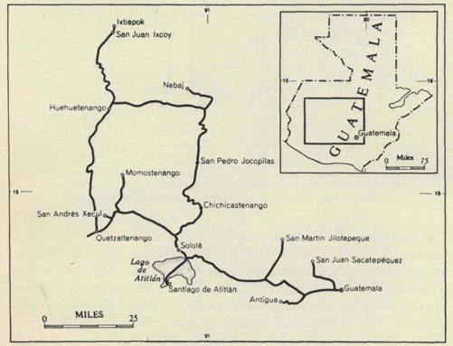
THE SACRED MUSHROOMS OF THE NAHUA
met us and lifted us to Guatemala City, a few hours away. Thereupon for almost
three weeks we devoted ourselves with Dr. and Mrs. Borhegyi to an intensive
ethno-mycological inquiry among the Indians of the Guatemalan highlands,
to discover whether there was any surviving trace of a mushroom cult.
Dr. Borhegyi had already brought close to completion his minute examination
of all the known mushroom stones, totalling more than a hundred. Additional
Fig- 17
ones are certain to be discovered as time goes on. They are an extraordinary
cultural expression for several reasons. The earliest seem to go back to the period
known to Maya students as the early pre-classic or developmental era, in the
second millennium B.C. In general the early ones for the layman are the most
striking: they are beautifully carved and the figure jutting out from the stipe
is often gripping in the vitality of the facial expression. We reproduce one of
the best of these, from the collection of Mr. Hans Namuth of New York.
This one is late pre-classic, that is, dating from the long stretch of years from
B.C. 500 to A.D. 200. The Rietberg specimen appears to be also from the
same period. Instead of a human figure, the carved effigy is often of an animal
277
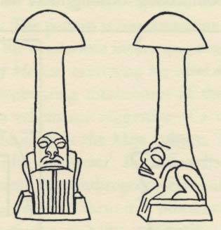
or bird - a jaguar, pisote,1 deer, a stylized bird impossible for us to identify,
and-here is for us a surprising discovery - the toad! We reproduce by line
block the best example of a toad mushroom-stone known to us, in profile
and full face. The face itself is anthropomorphic, but the four toes are the sure
stigma of the amphibian. Dr. Borhegyi considers this specimen pre-classic.
Fig. 18 MAYAN 'TOADSTOOL'
Represents a toad with anthropomorphic face; tentatively identified thus by Dr. Stephan
F. Borhegyi because of the crouch and the four-digited front feet. Ht. 35 cm. Probably
late pre-classic (500 B.C. -200 A.D.). Cerro Alux, near Mixco, Guatemala.
Museo Nacional 2209.
The mushroom-stones become scarce or perhaps even absent in the early classic
period, A.D. 200-500, but around the end of the late classic period, A.D. 600-900,
they re-appear, this time crudely carved, often with no effigy on the stipe.
Then they vanish for good, and for about the half millennium that preceded
the Conquest there is no trace of them, nor do they reappear in human circula-
tion until the end of the ipth century with the publication of Dr. Sapper's
observations. That the later mushroom stones should be the crudest is hardly
surprising: a cult in its pristine vigor expresses itself most freshly.
Dr. Borhegyi has generously made available to us his chart of the mushroom
stones, typing them by chronological and geographical provenience, and we
reproduce it here for the first time folded in the pocket at the end of our book.
The Maya still live in the Yucatan peninsula, Chiapas, Tabasco, and Guate-
mala. All of the many Indian languages spoken in Guatemala today, both
in the low-lying Peten and the Highlands, belong to the Maya family. In
the Highlands there are several linguistic families, but three of the languages form
I. This is the native name of the coatimundi (nasua narica), of the same family as the raccoon, a family distin-
guished anatomically by the fact that the males possess a phallic bone. The pisote was associated with phallic
matters by the Maya, but no phallus is present in any mushroom stone so far discovered. In Mexico the pisote
is called the tejon.
2 7 8
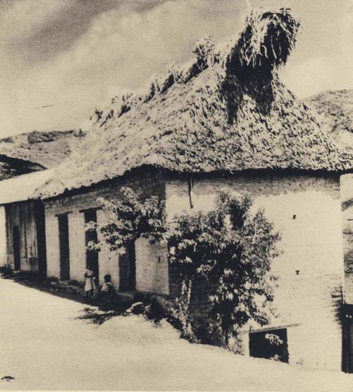
PLATE XLV. Cayetano's House, Huautla de Jimenez. June 1955.
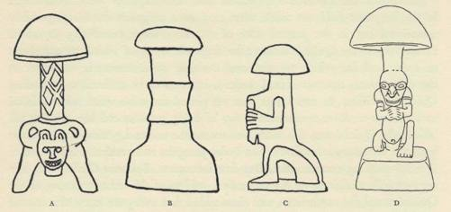
THE SACRED MUSHROOMS OF THE NAHUA
a contiguous and kindred nucleus, the Quichoid family - the Quiche, Kakchiquel,
and Tzutujil. Most of the prehistoric mushroom-stones have been found
roughly in the area known today as the Quiche and Kakchiquel country.
We visited Indian villages of these three peoples, and also Nebaj and San Juan
Fig. I). MUSHROOM STONES
A. Represents a jaguar, traces of red paint still visible. Kaminaljuyu, Mound £-111-3, tomb I.
Ht. 37 cm. Miraflores phase, 1000-5003.0. Museo Nacional, Guatemala, 3450.
B. Ocosingo, Chiapas, Mexico. Now in regional museum of Tuxtla Gutierrez. Probably late
pre-classic (1000 B.C. - 200 A.D.) or early classic (200-500 A.D.)
c. Represents a pisote (nasua narica) in characteristic pose with forefeet over nose. Salcaja,
near Quetzaltenango. Ht. 25.5 cm. Late pre-classic or early classic (Vitalino Robles collection).
D. Formerly in Museo Nacional, Guatemala. Probably late pre-classic.
Ixcoy, where Ixil and Kanjobal are spoken, languages related to the important
Mam-Maya group. We did not visit the Peten or Yucatan, as no mushroom
stones have yet been reported from those regions.
So far as a living mushroom cult or knowledge of such a thing is concerned,
our findings were conclusively negative. The elders in the villages that we visited1
were friendly and not reticent. We would bring the conversation around to
i. For workers in the field we supply the names of our informants and their towns. Kakchiquel-speaking:
San Juan Sacatepequez, the official interpreter Bravlio; San Martin Jilotepeque (the language here influenced
by ancient Pokomam occupation), Don Francisco Martinez del Rosal, owner of finca Las Pilas, and Alberto
Calan, 3rdregidor; Solola, Nicolas Akichi, textile vendor. Quiche-speaking: Chichicastenango, Miguel Ignacio,
the maker of wooden dance masks, and Diego Panjojehan, who lives in Chujupen; San Pedro Jocopilas, Epilonio
Giron, head of the municipal guard, and Don Ignacio Barrios, Mayor; San Andres Xecul, Pedro Raimundo
Hernandez; Momostenango, Aparecio and Santiago Lajpop. Tzutujil-speaking: Santiago de Atitlan, the cripple
Don Salvador Ramirez and the artist Juan Sisay. The following are sub-divisions of the Mam group. Ixil-
speaking: Nebaj, Trinidad Gomez, candle-maker. Jacalteca-speaking: Concepcion Huista, Antonio Ramirez
Paz, former alcalde. Kanjobal-speaking: San Juan Ixcoy, Mateo Velazquez, alcalde, and F. Ruben Gonzalez,
first official.
2 7 9
mushrooms, collect vocabulary, and finally begin to discuss the inebriating vir-
tue of certain kinds. Our informants were invariably surprised to learn that such
mushrooms existed, and showed themselves most curious and even envious as
we described the divinatory mushrooms of the Mazatecs.
Though of direct evidence we found none, our inquiries were not fruitless.
In the linguistic field we made what may be a pregnant discovery, possibly
sensational but in the present state of our knowledge tantalizing. It relates
exclusively to the Quiche Indians: the linguistic usage of which we are about
to speak and for which we obtained multiple confirmation is unknown in
the other places that we visited. Indeed, it seems to be unfamiliar to leading
Quiche specialists. In every area that we visited the same word with dialectal
variants was used for mushroom: ocox, V being pronounced like the English
'sh'. In the Quiche area this word also means the external genital organs of the
woman. We learned this first in San Pedro Jocopilas and verified it later in other
Quiche-speaking communities. Our first informant, Epilonio Giron, after our
women folk withdrew on his suggestion, told us of this other meaning of the
Quiche word for mushroom, and then added that everyone knew this second
sense, but that one should never use it. In short, it is tabu. In Momostenango
Suzanne Borhegyi and Masha, off on their own, accompanied by a young
Indian woman as interpreter, broached the subject with a flock of Indian women
there, whom they discovered washing clothes in the rushing stream. Their
inquiries evoked peals of merry laughter, but no elucidation whatever. The
women refused to develop the subject, and who shall blame them?
In our Mazatec inquiries we had uncovered a curious linguistic usage
concerning mushrooms. The reader will recall that there is no single Mazatec
word that embraces all the mushrooms. There are two, one for all kinds save
the divinatory species, and another general term for the various species held
in honor as vehicles of divine inspiration. The Indians of Guatemala are not so
mycophagic as the Mexicans, but in the market places there mushrooms of
various kinds are on sale, and we were startled to discover in Guatemala city
that the Spanish word hongo covers all species except one. That one is the fav-
orite for the table and its common name is anacate. In all likelihood anacate is an
eroded form of the Nahuatl nandcatl. Whether the borrowing took place before
or after the Conquest, we do not know, but already when the Spaniards arrived
the Nahuatl influences in the Maya area were powerful. This verbal fission,
dividing the mushroom world into two without an overriding collective term,
is a curious thing, especially as it recurs in two places as far removed from
each other as Huautla and Guatemala City. We took pains to identify the
280
THE SACRED MUSHROOMS OF THE NAHUA
anacate of Guatemala, eating it in quantity and in San Juan Sacatepequez going
out after them in the woods with our interpreter Bravlio. We found them
exactly where the market women of Guatemala City had said we should,
among the encinos blancos, 'white oaks', which turned out to be the oak known
to botanists as the quercus fulva. The mushroom could be taken either for a
large cantharellus or for a craterellus, and it is in fact the craterellus cantharellus
Fr. ex Schw. It is a chanterelle without lamellae.1
Dr. Borhegyi later combed the Quiche and Kakchiquel chronicles and legends
for references to mushrooms. There come down to us from early times two
native narratives of the Highland Maya, one in Quiche and the other in Kakchi-
quel, the Popol Vuh and the Annals of the Kakchiqnels. Written in the native lan-
guages, they have been translated into Spanish and English. Dr. Borhegyi dis-
covered in each of them one reference to mushrooms, and in each case mush-
rooms are associated with religious observances. These texts were certainly
composed after the era we assign to the mushroom stones, but they give us
documentary evidence that mushrooms played a role in the religious life of the
Highland Maya. (We realize that the ancestors of the Quiche and Kakchiquel peo-
ples are supposed to have arrived in their present location as conquerors around
the 12th century, but whoever the conquerors may have been, it is probable
that the indigenous culture absorbed them.) Here is the passage in the Popol Vuh,
as presented in the English text by Delia Goetz and Sylvanus Griswold Morley:
And when they found the young of the birds and the deer, they went at once to place
the blood of the deer and of the birds in the mouth of the stones, that were Tohil and
Avilix. As soon as the blood had been drunk by the gods, the stones spoke, when the
priests and the sacrificers came, when they came to bring their offerings. And they did the
same before their symbols, burning pericon and holom ocox.
[University of Oklahoma Press, 1950, p. 192]
We do not know what pericon was.2 'Tohil' was the Quiche variant of the
Toltec Quetzalcoatl, the 'feathered serpent', but we know not how the god
Avilix looked. Holom ocox means 'mushroom head'. In San Martin Jilotepeque
our informant Alberto Calan had told us of an unwholesome mushroom known
to him as the holom ixpek, 'toad's head', a name doubly interesting for us because
it links the mushroom with the toad and because of the fungal use of the word
for 'head', reminding us of the passage in Popol Vuh.3
1. Our specimens of the anacates were the subject of a note by Professor Roger Heim that appeared in the
Revue de Mycologie, April 1954, Tome xix, Fasc. i, pp. 53fF.
2. If it is the plant known commonly in Mexico today by the same name, it is the tagetes lucida Cav.
3. The Quiche word for 'toad', ixpek, is startling because of its superficial resemblance to the Indo-European
2 8 l
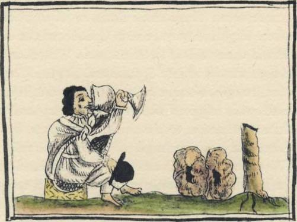
The passage in the Annals of the Kakchiquels as translated from the original
by Adrian Recinos and into English by Delia Goetz reads thus:
At that time, too, they began to worship the devil. Each seven days, each thirteen days,
they offered him sacrifices, placing before him fresh resin [i.e., copal], green branches, and
fresh bark of the trees [i.e., amate?], and burning before him a small cat, image of the
night. They took to him also the mushrooms of the trees, and drew blood from their ears.
Fig. 20. INDIAN DRINKING FROM A SPANISH GOBLET
As represented by a i6th century Spanish artist; from Florentine Codex
of Bernardino de Sahagiin's Historia dc las Cosas de la Nueva Espaiia.
Biblioteca Laurenziana, Florence.
Again the words in the original tongue are holom ocox, 'mushroom heads', and
they are described as 'of the trees'.1 We had learned in Huautla that one of the
four kinds of sacred inebriating mushrooms grows hi trees, and Juan de Cordoba
in his Zapotec lexicon calls it the nocuana peneeche. Here then hi the Kakchiquel
root discussed on pp. 92 ff. We found several variants — xepek, ixpuk, xpuk —• in the towns we visited. In all
cases V has the phonetic value of English 'sh'. The word carries other meanings, such as 'cave' in Quetzal-
tenango. In Chichicastenango we found that a similar word relates either to the vagina or the womb. We are
told that in the Zapotec dialect spoken at Mitla xkep means 'womb'. We had neither time nor competence to
explore the suggestion here of a cultural association linking toads to fertility such as we find in Europe. I. In the
Recinos-Goetz translation, University of Oklahoma Press, 1953, pp. 82-83, the passage is rendered thus:
. . . the mushrooms (which grow at the foot) of the trees . . .
The interpolated words are obviously superfluous, the translators presumably not knowing that many mushrooms
grow in trees. This reference to tree fungi reminds us of a curious passage in the Relation de las Minas de
Temazcaltepec, where Caspar de Covarrubias enumerates briefly the kinds of food that the people eat, and in
the brief list he finds place to include ongos de arboles, 'tree-mushrooms'. See Papelcs de Nueva Espaiia, Paso y
Troncoso, Madrid, 1905, vol. vn, p. 31.
Juan de Cordoba's i6th century Zapotec lexicon refers to arboreal fungi, and in Huautla our mrandero, Au-
relio Carreras, spoke of a divinatory species growing on wood. It seems probable that arboreal fungi play a distinct
role in Middle-American fungal lore, one that remains to be explored.
2 8 2
THE SACRED MUSHROOMS OF THE NAHUA
text, which was put down on paper after the Conquest under Spanish influences
but which recalls pre-Conquest events, we read of a religious rite in which
arboreal mushrooms were used.
Both the Quiche and the Kakchiquel narratives use the same expression -
holom ocox. Obviously this should be translated as 'mushroom caps', and we
know from our Mije notes that the cap in Mije is a 'head'. We find the same
metaphor in Mazatec, where the cap of the mushroom is the hko4, meaning
'head'. Perhaps the reader has hit on the further observation that we now make.
The Mije and Mazatecs in their mushroom cult lay stress on the separation of
pileus from stipe, and the virtue lies primarily in the pileus. They are still follow-
ing the practice recorded for us by the ancient Quiche and Kakchiquel narrators,
still decapitating their ceremonial mushroom.
As we thumb through the pages of Sahagun's immense work, in the Florentine
Codex, we discover yet another miniature relevant to our argument. Executed
by an Indian under Spanish influence, it is pregnant with mushroomic meaning.
On the left we discover an Indian drinking from a Spanish goblet. On the
right are two mushroom caps, 'heads', the Quiche holom ocox, the Mije kobahk,
the Mazatec hko4. There are a pair of these caps, i.e., the Mije casada. A decapi-
tated stipe stands on one side. Thus in this picture we come upon themes familiar
to us from present-day usages among the Mije and Mazatecs and in the pre-
Conquest annals of the Quiche and Kakchiquel peoples. We have found in
Sahagun's text no passage that this miniature illustrates. What does it mean?
We venture a rash but tempting guess. There must have been a moment in
the social history of i6th century Mexico when the fire-water of the Spaniards
confronted the inebriating mushrooms of traditional use with a challenge deeply
disturbing to the emotions of the conservative Indians. Does not this miniature
illustrate that moment of challenge ? The mushroom caps are disproportionately
big: this is the artist's device for showing their subjective importance, just as in
the earlier miniature, on page 235, Mictlantecuhtli, Lord of the Underworld,
hovers with giant stature over the Indian who is eating his pair of teo-nandcatl.
In the indigenous cultures of Middle America one of the crucial problems for
anthropologists is the interplay, over thousands of years, between hieratic cul-
tures on the one hand, rising and falling spasmodically and sporadically and
often leaving behind spectacular monuments, and on the other hand, the folk
cultures of the farming population, simple, relatively homogeneous, and singu-
larly tough in resisting outside influences.1 Humble artifacts such as incense
I. For an illuminating discussion of this problem see Stephan F. Borhegyi's 'Cultura Folk y Cultura Compleja
283
burners, figurines, and clay effigies fashioned so as to serve also as whistles have
been made in virtually the same styles for three thousand years and are still
being sold at the present hour in the native market places. The mushroom stones
do not belong to this folk culture. If they are a clue to a mushroom cult, we
must suppose that the cult was hieratic, the attribute of a priestly elite, and
that that cult passed away with that elite. The highest achievements of the
Mayan culture, which are known to have been hieratic, belonged to the lowland
Maya of the Peten and Yucatan, where no mushroom stones have been found.1
However, there could also have been priest-governed societies in the Highlands,
and in fact in the Highland excavations at Kaminaljuyu, near Guatemala City,
there has been found in a pre-Classic tomb that was probably sacerdotal one of
the effigy mushroom stones, representing a jaguar.2 We suggest that there was
once a mushroom cult in the Highlands in the formal, organized sense, a liturgy
administered by priests on set occasions, perhaps for the laity to join in. How
different such a cult would be from the intimate, family use of the divinatory
mushrooms that we have witnessed among the Mazatecs and Mije, where the
mushrooms are consulted, when available, if needed, in the dead of night, with
only two or three gathered together! But there is no necessary contradiction
here. Our i6th century writers tell us of the large gatherings where the mush-
rooms were consumed in public. And what could have been more inviting to a
priestly elite than to take over from the folk culture their divinatory mushrooms,
and clothe the deeply stirring faith of the people in those divine mushrooms
with the ceremonial habiliments that an elaborate ritual would have required?
As we review our evidence, we discern an endemic use of inebriating mushrooms
from earliest times in the enduring folk culture of Middle America, not in the
low, hot country, but throughout the higher country, over an area extending
from the Valley of Mexico into Guatemala and Salvador. We see this endemic
folk usage seized upon, taken over, lifted up, and reverently exploited by the
sophisticated priestly elite in certain hieratic phases of the upland cultures.
Certainly we have not discovered the tie that would unequivocally bind the
mushroom stones of Guatemala and Chiapas with today's intimate folk cult. That
en el Area Maya Meridional", Ciendas Saddles, published by the Pan-American Union, Washington, D. C.,
vol. v, No. 26, April 1954.
1. Is it coincidence that, just as the mushroom stones are found only at a certain altitude and never in the hot,
low country, so according to our informants in Huautla and Mazatlan, the use of the divinatory mushroom is
unknown among the Mazatecs and Mije living today in the ticrra caliente?
2. For further illustrations and discussion of this remarkable specimen, one of the oldest known, see Publ.
596 of the Carnegie Institution of Washington, 1952, which is vol. xi of the series of Contributions to American
Anthropology and History, paper No. 53, 'Mound E-m-3, Kaminaljuyu, Guatemala', by Edwin M. Shook and
Alfred V. Kidder, fig. y8fand 13 (No. 193), and p. 112. We reproduce this mushroom stone in fig. 19 A.
2 8 4
THE SACRED MUSHROOMS OF THE NAHUA
such a link will be discovered is unlikely but not impossible. Perhaps on some
holy hill or ce.no, or deep in the recesses of some cave, in a remote corner of
Oaxaca or Chiapas, the Indians still direct their humble supplications to a
stone image of a mushroom, unbeknownst to circumambulating ethnolo-
gists. Unless someone discovers such a survival, how can we hope to establish
a connection between the ancient stone carvings and the divinatory mush-
rooms ;
Yet the evidence that we have assembled points toward such a connection.
We know that the Indians of Middle America are mycophiles with extensive
knowledge of mushroomic properties and corresponding vocabularies. In their
cultures mushrooms have always been emphasized, not ignored. Among these
Indians religious associations have always interpenetrated every aspect of human
existence, and it would be rash to assume that this fusion of daily life with
religious beliefs excluded the fungal world at the time when the mushroom
stones were carved. We know furthermore what a profound hold the ceremonial
mushrooms have to this day on certain of the remoter Indian tribes, and the range
of this cult doubtless runs beyond the limits that we have had opportunity to
explore. In the case of the Mije, their country overlaps the area where the
later mushroom stones seem to have been found. We know from surviving
annals that before the Conquest ceremonial mushrooms were used in religious
observances in the Guatemalan Highlands, where most of the earlier stones have
been found. A divinatory mushroom grips the imagination, and it would justify
the functional use, in religious ceremonies, of the mushroom stones. The presence
of a divinatory mushroom is rare in human cultures: would it not be extraor-
dinary to find a mushroom cult in the same area with the mushroom carvings -
themselves unique - and yet unrelated to them? Whereas in the past no one was
suggesting a mushroomic explanation for the mushroom stones, we think that
the presumption favors such an explanation now, and that the burden of the
argument must he on those who oppose it.
Meanwhile many exciting questions remain unanswered and cry for the further
field work that we cannot undertake. We have not fully identified the divinatory
mushrooms that the Mazatecs and Mije use, to say nothing of other peoples
where the cult may survive. They must be securely identified, with multiple
corroboration. Their specific properties as understood by the Indians must be
fully set down. Then they must be proved empirically, under controlled con-
ditions. The Mije have developed sweeping explanations for any failures in the
use of their divinatory mushrooms: this suggests that auto-suggestion plays
a role, or that sometimes the wrong mushroom is taken, or that the virtue
varies under differing circumstances. The difficult task of chemical analysis,
with the isolation of the active agents, will be the final achievement.
The Mije are related linguistically to the Zoques, their neighbors to the east
in Chiapas. What do the Zoques know of the divinatory mushrooms> If they
use them, perhaps we shall discover, after all, that the Maya peoples immediately
to the east of them also share the cult, or remember having practiced it in the
past.1 Robert Weitlaner knows the Chinantecs as well as any other living
anthropologist. Among them he has failed to find any trace of the divinatory
mushroom, though they live between the Mazatecs and the Mije. How strange
this is! But it only points up the importance for all workers among the Indians
of Middle America, both linguists and anthropologists, to include the divinatory
mushrooms in their inquiries, and to report their findings whether negative
or positive. Where the cult does not survive, memories of it may, and where
no memories exist, perhaps in the names for mushrooms the linguists may trace
forgotten knowledge. Slowly we should begin to pinpoint the results of such
inquiries on a cultural map of Mexico keyed to the mycological lore of the
Indians. But the search for evidence should not be limited to our contemporary
world. The whole corpus of surviving pre-Conquest artistic expression in the
highland areas of Middle America should also be reviewed, on the chance that
divine mushrooms figuring therein have hitherto escaped detection. Later we
shall venture some suggestions of our own in this archeological field.
I. There are grounds for Unking together the Maya and the Mije-Zoque cultures, the two linguistic groups
being perhaps descended from a common parent stock. See J. Alden Mason's paper on Middle American
linguistic groupings in The Maya and Their Neighbors, D. Appleton-Century, N. Y., 1940 (a Festschrift in
honor of A. M. Tozzer), p. 72.